Terminal Agent Environment Synthesis：六篇论文与一条数据生产线
核心问题
这里不比较“谁在 Terminal-Bench 上分数更高”，而是回答一个更基础的问题：
如果我们想训练一个 terminal agent，怎样把一句自然语言任务变成一个可启动、可交互、可恢复、可自动打分的环境？
六篇论文恰好给出了六种取舍：
- Endless Terminals：把生成拆成四个阶段，用硬过滤保证 container 可用、测试有效、任务可解。
- TMax：用九个正交轴直接控制多样性与难度，省掉昂贵的 teacher correctness filter，把一部分过滤推迟到 RL rollout。
- SkillSynth：先在 scenario-mediated skill graph 中采样一条最小解题路径，再让 multi-agent harness 实例化任务。
- Terminal-World：把 agent skill 当作同时包含 what / when / how 的合成原语，共同生成 instruction、environment、verifier 与 teacher guideline。
- CLI-Universe：先用真实技术材料把 task blueprint 研究扎实，再用 rubric-gated tests、hint 对照和 fail-to-pass 提高监督密度。
- Terminal-Lego：把真实 StackOverflow issue 级联生成成可执行任务，再追问固定 harness 下什么样的 inspect–act–verify trajectory 最适合教会 student。
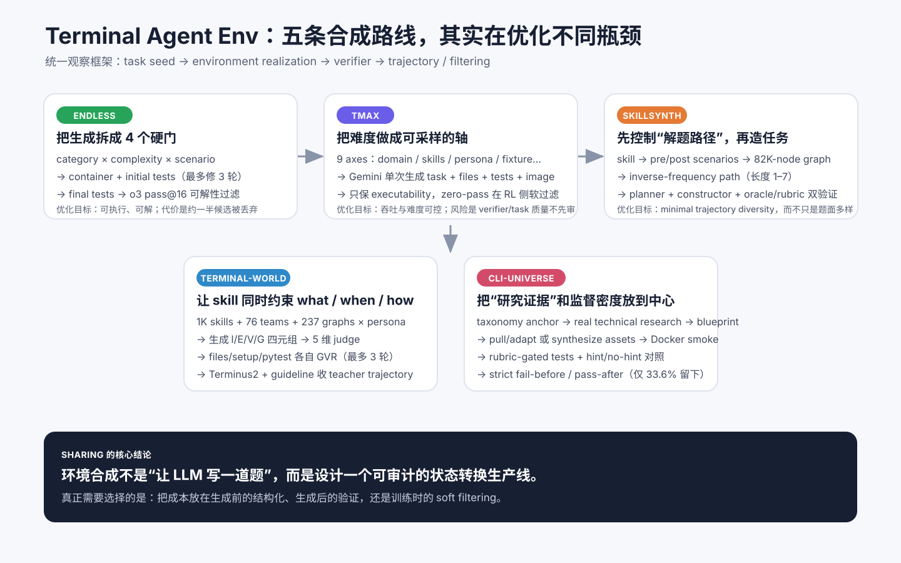
自制方法地图展示前五篇以 environment synthesis 为主的路线。Terminal-Lego 复用同一组 task 做 matched-teacher 对照，把问题继续推进到 harness 与 trajectory supervision：环境可执行只是起点，交互过程是否显式暴露 observation 才决定它是否适合蒸馏。
一个 terminal training environment 包含什么
一个完整训练实例不只是 prompt，而是五件东西：
| 组件 | 作用 | 常见文件/表示 |
|---|---|---|
| Task instruction | 告诉 agent 要达到什么目标 | task.md、instruction |
| Initial state | 定义开始时有哪些文件、服务、错误状态 | source files、fixtures、filesystem snapshot |
| Runtime | 保证依赖、权限、网络和进程可重放 | Dockerfile、Apptainer .def、setup script |
| Verifier | 把终态映射成 reward | pytest、unit tests、protocol checks |
| Trajectory | agent 与环境交互的 action/observation 序列 | shell commands、stdout/stderr、teacher trace |
最关键的是它定义了一个状态转换：
\[(\text{instruction}, s_0) \xrightarrow{\text{agent actions}} s_T\]而 verifier 给出：
\[r = V(s_T)\]如果 $V(s_0)=1$，测试是空的；如果正确解之后仍有 $V(s_T)=0$，测试或环境是错的；如果任务根本不可解，RL 只会看到没有信息量的全零 reward。
因此环境合成的核心不是“生成更多题面”，而是让 instruction、initial state、runtime 和 verifier 共同指向同一个可观察的终态。
六篇论文总览
| Paper | Seed / 控制变量 | Environment realization | Verification / filtering | Harness | 规模 |
|---|---|---|---|---|---|
| Endless Terminals | category × complexity × scenario | LLM 生成 initial tests + Docker/Apptainer，失败反馈最多 3 轮 | final tests 初态必须失败；o3 pass@16 > 0 | 自研极简 XML command loop；Docker 用 Harbor，实验用 Apptainer | 3,255 |
| TMax | 9 axes：domain、skill type、primitive skills、persona、language、task/command complexity、fixture、verifier | per-domain base image + per-task delta；单次生成 task/files/tests/image | 只硬保 executability；policy pass rate=0 在 RL 时 soft filter | mini-SWE-agent 风格 Vanillux；Harbor；Apptainer/Podman | 14,600 |
| SkillSynth | skill 的 pre/post scenario graph；path length 1–7 | planner → constructor 生成 instruction、snapshot、container、tests、oracle | oracle execution + rubric judge；verify-repair | multi-agent synthesis harness；评测用 Terminus 2 + Harbor | 3,560 usable |
| Terminal-World | 1K skills + 76 teams + 237 graphs × 4,973 personas | initial files / setup / pytest 各自 GVR，最多 3 轮 | 五维 task judge；文件一致性；setup probing；pytest 初态必须失败 | teacher 为 DeepSeek-V3.2 + Terminus2；shared Debian sandbox | 5,723 |
| CLI-Universe | domain × skill type × capability × engineering pillar，再做 real-world research | pull/adapt 或 synthesize assets；Docker assembly + smoke tests | rubric-gated tests；hint-free fail / hinted pass；strict fail-to-pass | trajectory teacher Kimi-K2.6；评测 Terminus 2 | 6,000 trajectories |
| Terminal-Lego | StackOverflow accepted answer + vote filter；90+ domains | instruction → files → solution → difficulty → tests → Dockerfile 级联生成 | AST syntax + 独立 LLM review，最多 3 轮；Docker solve→test reward > 0 | 生成/验证用 Docker；trajectory 固定 Terminus-2 + tmux | 15K+ tasks / 15.3K trajectories |
两个容易混淆的数字：
- TMax 的正式名称是 TMax-15K，论文给出 14,600 个 RL environment instances。
- CLI-Universe 的 6K 是最终训练 trajectory 数，不是论文披露的全部候选 environment 数；全流程只有 33.6% 候选保留。
Endless Terminals：最清楚的四阶段基线
Pipeline
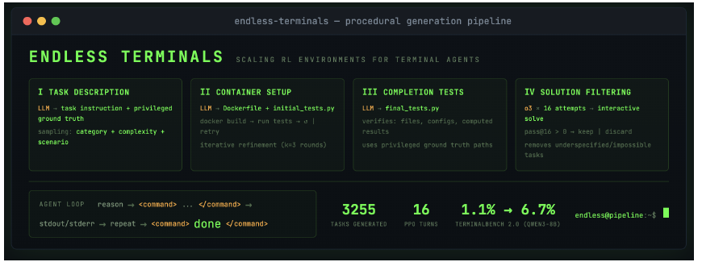
原论文 Figure 1。四阶段依次是 task description、container setup、completion tests、solution filtering，最终产出 3,255 个 verified tasks，再用 binary episode reward 做 PPO。图中的 16 表示训练 turn budget；1.1% → 6.7% 是 Qwen3-8B 在 Terminal-Bench 2.0 上的迁移结果，不是环境过滤阈值。这条 pipeline 构成了最基础的坐标系：后续工作的复杂设计都可以看成在这四个位置增加新的控制变量或验证器。
Stage I：Task description + privileged truth
每次 prompt 随机采样三个维度：
- task category：file management、text processing、log analysis、git、database、security 等；
- complexity：单命令到多步 workflow；
- scenario context：developer、DevOps engineer、data analyst 等。
LLM 同时输出：
- 给 agent 看的 task instruction；
- agent 看不到的 privileged truth，包括路径、精确文件内容、期望终态。
这里的关键不是 persona 本身，而是把“公开任务”和“私有验收信息”从一开始分开。
Stage II：Initial-state test + container
输入 task description 与 truth，生成：
test_initial_state.py；- Dockerfile 或 Apptainer definition。
执行闭环：
generate container
→ build
→ run initial-state tests
→ feed build/test error back to LLM
→ retry, at most 3 rounds
→ still failing: discard
initial-state tests 检查开始前必须存在的文件、目录、进程或 repository。它们不判断任务是否已经完成，只判断环境能不能开始。
Stage III：Final-state tests
第二份测试检查任务完成后的 filesystem / service / computed result。
硬约束：
final tests on initial state = fail
这一步消除最常见的 vacuous verifier：测试什么都没检查，初态也会通过。
Stage IV：Solution-based filtering
用 o3 对每个任务独立尝试 16 次：
keep(task) iff pass@16 > 0
它确认任务至少在当前强模型能力边界内可解，但也引入 teacher ceiling：所有 o3 解不出的任务都被丢弃，其中可能包含正确但更难的任务。
一条公开数据怎样对应四个阶段
公开的 Harbor 格式数据里可以直接查看 task_000000_00b7d96d。这道题要求 agent 在 /home/user/api-test 中建立 Python virtual environment，安装指定版本的 httpx 与 requests，再生成内容严格匹配的 requirements.txt 和 install.log。
| Pipeline stage | 这个样本中的 artifact | 谁生成 / 表达什么 |
|---|---|---|
| I. task description | instruction.md |
LLM 生成给 agent 看的公开任务：目录、包版本、文件内容和终态约束。privileged truth 不作为单独的公开字段交给 agent，而是被编译进环境与 verifier。 |
| II. container setup | environment/ 下的 container.def、Dockerfile、test_initial_state.py |
.def 建立 Apptainer 初态；Dockerfile 是转成 Harbor 后的等价环境；initial test 检查 /home/user、Python/pip 等 prerequisite 已就绪，同时目标产物尚未被提前创建。 |
| III. completion tests | tests/test_final_state.py 与 tests/test.sh |
验证 venv、可执行文件、两个文本文件的精确内容，以及包确实装在该 venv 中；test.sh 把 pytest 结果写成 binary reward。 |
| IV. solution filtering | solution/ 下的 o3_summary.json |
保存 o3 的交互尝试及成功统计；只要 16 次里至少一次通过 final tests，这条任务就被保留。 |
| Harbor packaging | task.toml、solution/solve.sh、目录布局 |
这些不是新的 synthesis stage，而是把已验证 task 包装成 Harbor 可调度、可复现执行的格式。 |
作者仓库还公开了一个较轻量的 tasks.json，适合快速浏览 instruction、difficulty/category 与 CPU、内存、存储、timeout 等运行配置；完整环境 artifact 则看上面的 Hugging Face 目录。需要注意：Hugging Face 数据位于 obiwan96 账号，页面称其随论文发布且包含约 2,500 个 Harbor 环境，但论文作者的 GitHub README 没有反向链接它，因此这里将它标作公开数据镜像，不把账号归属说成作者官方。
Dockerfile、Apptainer、Harbor 与 PTY 不是同一层概念
| 名词 | 格式 / 作用 | 在 Endless Terminals 里的位置 |
|---|---|---|
| Dockerfile | 按行写 image build 指令，常见语句是 FROM、RUN、COPY、ENV、CMD；构建结果通常是分层的 OCI/Docker image。 |
约 2,500 个任务被转换成 Docker/Harbor 格式，便于用通用 container backend 运行和评测。 |
Apptainer definition (container.def) |
header 指定 Bootstrap / From，正文按 %post、%files、%environment、%runscript 等 section 组织；构建结果通常是单文件 .sif image。 |
论文得到 3,255 个 Apptainer task，并用这条路径完成全部训练实验。Apptainer 常见于 HPC，可在没有常驻 Docker daemon 的环境里以普通用户运行。 |
| Harbor | terminal-agent 的 environment / task orchestration 与 evaluation harness，不是这里所说的 Docker 镜像仓库产品 Harbor。它负责按 instruction.md + environment/ + tests/ + task.toml 启动容器、连接 agent、运行 verifier、收集结果。 |
论文的 Docker 路径交给 Harbor；作者仓库也提供 Harbor adapter 和并行评测脚本。 |
| PTY | pseudo-terminal，给进程提供“像真的交互式终端一样”的输入输出通道；它不是 image 格式。PTY 能保留 TTY 检测、shell prompt、信号和交互语义。 | Apptainer 路径用一个 persistent PTY shell；同一 episode 的多轮 command 共享 filesystem、环境变量和后台进程状态。 |
所以“Docker 用 Harbor、Apptainer 用 PTY”不能理解成两组同类替代品。更准确的分层是：
image/runtime layer: Docker/OCI image | Apptainer .sif
orchestration layer: Harbor framework | authors' custom persistent session
interaction channel: environment.exec(...) | PTY-backed interactive shell
格式细节可对照 Dockerfile reference、Apptainer definition files 与 Harbor task structure。
Prompt 和 harness 到底长什么样
论文没有在正文逐字列出生成 prompt，也没有披露 Stage I–III 使用的具体生成模型：正文始终只写 “a language model” 或 “the model”。它唯一明确命名的生成阶段模型是 Stage IV 的 o3，用于 16 次 solvability-filter 尝试。
这里还要区分两种 trajectory：
o3产生的是数据进入训练前的过滤 trajectory，作用是判定任务是否至少可解一次；- PPO 阶段的 16 rollouts / prompt 是当前被训练 policy 的 on-policy trajectory，不是拿 o3 trajectory 做 RL。
当前开源实现把生成模型做成可配置参数；README 的复现命令示例对 task generation 和 solution generation 都填写 Qwen/Qwen3-32B。这说明代码可以用 Qwen3-32B 重跑，不能反推论文中的 3,255 条原始环境就是由它生成的。
代码仓公开了主要 prompt 与文件结构，可以直接跳到：
- Stage I task + privileged truth prompt
- Stage II initial-state test prompt
- Stage II Apptainer definition prompt
- Stage III final-state test prompt
- Stage IV solution-agent prompt
- 全部 generator 源码目录
其核心约束是：
- public task 要像用户请求；
- truth 要列清路径、内容和 expected state；
- initial test 只检查 prerequisite，不能检查输出；
- final test 从 truth 构造；
- container build error 会回填给生成模型。
Agent interaction loop 非常小：
reasoning...
<command>one shell command</command>
完成时输出：
<command>done</command>
每轮把 stdout、stderr、exit code 追加回历史。训练最多 16 turns / 16K context；评测可到 64 turns。论文主实验使用 persistent Apptainer PTY；Docker/Harbor 是另一条受支持的执行与评测路径。
公开实现与数据链接
- 论文 HTML / arXiv abstract
- 作者代码仓库
- 作者仓库中的 task 索引
tasks.json - 公开 Hugging Face 环境镜像（约 2,500 个 Harbor task bundles）
- generation prompts
最值得带走的点
Endless 的设计原则是：
generator 可以犯错，但每一阶段必须有一个机器可执行的局部验收信号。
它的问题也很直接：
- pass@16 过滤成本高；
- “至少一次成功”确认可解，不保证 verifier 与自然语言完全对齐；
- 任务分布容易像竞赛题，而不像模糊的真实请求；
- 最终数据对强模型偏容易：TMax 后续测得 Gemini-3-Flash 在 Endless 上 pass@1 很高。
TMax：从“多阶段严审”转向“正交轴 + soft filtering”
九个轴怎样组成任务
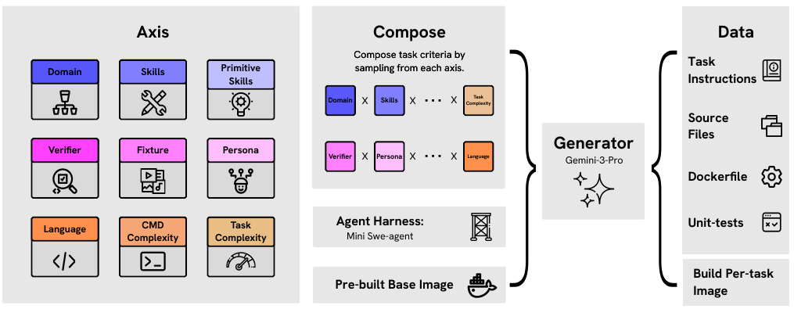
原论文 Figure 2。左侧九个轴先组成 task signature，Gemini-3-Pro 再一次性实例化 source files、Dockerfile、unit tests 和 instruction；任务构建在 per-domain pre-built base image 上，并通过 mini-SWE-agent 风格 harness 提供交互。这个 single-build 设计省掉了昂贵的 teacher solvability validation，把规模化重点放在组合采样与 executability。
TMax 的九个采样轴：
| Axis | Cardinality / 示例 | 控制什么 |
|---|---|---|
| Domain | 9：security、SWE、file ops、data querying… | 主题覆盖 |
| Skill type | 每个 domain 4–7 类 | 知识类型 |
| Primitive skills | 每个 domain 20–40；每题采 3–5 个 | 组合能力 |
| Persona | 每个 domain 6–18 个 | 使用场景 |
| Language | Python、C、Bash、C++、Rust、Go、multi-language、any | 实现分布 |
| Task complexity | short / moderate / complex / intricate | workflow 长度 |
| Command complexity | bash-only / bash+code / bash+code+services | action space |
| Fixture | text、image、audio、video、binary、vendored package、multi-service | 输入形态 |
| Verifier | exact text、metric、adversarial、fuzz、multi-protocol | reward 形态 |
它的采样并非简单笛卡尔积。九个轴定义的是任务分布的坐标系，代码并不会枚举所有组合，而是为每个任务执行一次有条件、有权重的顺序采样。完整实现可跳转到 random_user_msg，v2 的 bucket weighting 在 _bucket_upweight_choice。
具体过程是：
- 从 9 个 domain 中均匀抽取一个；
- 只从该 domain 内抽一个
skill_type； - 将该 domain 下所有 skill type 的 primitive skills 合并，再无放回抽取 3–5 个；
- 从该 domain 对应的 persona/scenario 池采样，而不是从全局 persona 池采样；
- 以 0.35 概率加入一个 real-software anchor，例如 “JWT implementation accepts
algorithm=none”； - 按人工权重抽语言，而非均匀抽样：Python 0.35，C/Bash 各 0.15，C++ 0.10，Rust/Go 各 0.07；
- 根据
corpus_kind再决定 complexity、fixture 和 verifier 的分布。
这里有个容易忽略的细节：skill_type 是任务的主类别，但 primitive skills 并不局限于这个 skill type，而是可跨同一 domain 下的其他类别。例如一题的主类别可以是 Algorithmic，同时组合 token validation、authentication testing 和 reverse engineering。这比在固定小类里机械拼接更容易产生跨技能 workflow。
rl_v2 的 weighting 也不是笼统的“多采一点难题”：
| Axis | 5k rl_v2 内部采样 |
与 10k legacy 合并后的 15k 分布 |
|---|---|---|
| Task complexity | intricate 概率 75%；其余三个难度共享 25% |
short / moderate / complex / intricate 各约 25% |
| Verifier | 不再抽 exact_text；四种新 verifier 均匀采样 |
exact_text 约 66.7%；四种新 verifier 各约 8.3% |
| Fixture | 不再抽 text_only；六种新 fixture 均匀采样 |
text_only 约 66.7%；六种新 fixture 各约 5.6% |
因此，“九轴组合”更准确地说是一个 factorized but conditional distribution：domain 决定 skill/persona 候选池，corpus_kind 决定新旧 bucket 的概率，抽出的 signature 再交给 LLM 实例化。即使 signature 相同，LLM 仍可能生成不同的 task。任何新型 fixture/verifier，或 complexity 为 intricate 的任务，都会路由到预装 OCR、ffmpeg、binutils 和科学计算库的 base_intricate image。
Prompt contract
TMax 代码公开的 task generator prompt 可以压缩成下面这份 field contract：
System:
role = domain-specific task builder
requirements = challenging, programmatically verifiable, self-contained, realistic
output = <task> public instruction </task>
<truth> privileged verification data </truth>
User:
skill_type
primary_language
3–5 primitive_skills
task_complexity
command_complexity
persona/scenario
optional real-software anchor
verifier_kind
fixture_kind
<truth> 不是给 agent 看的标准答案，也不是 SFT 的 target；它更像 task generator 与 verifier generator 之间的 privileged rubric / intermediate representation。它不是严格 JSON schema，而是一段半结构化文本，所以不同任务里的内容可能差异很大：有时是预期文件与数值，有时包括 setup procedure，有时主要是 verifier configuration。
它必须声明：
- exact paths；
- setup 前应存在的对象；
- agent 应创建的对象；
- 对 derived value 的可复现计算过程；
- verifier-specific parameters。
例如：
metric_threshold：metric 公式、reference、threshold、output path；adversarial_corpus：evil/clean corpus 路径、双向 pass criterion、entry point；fuzz_equivalence：oracle path、input distribution、N、agent executable；multi_protocol：host:port、protocol request/response、credentials。
final-test generator 会同时读取 description、truth 与 initial-state test，再生成 test_final_state.py。但它也被明确要求：把 truth 当作 rubric 的意图，而不是无条件可信的常数；如果 expected value 可以从输入重新计算，就应在 verifier 中重新计算，而不是直接复制 opaque literal。对应代码见 completion_test_gen.py。
然后独立生成：
- initial-state pytest；
- final-state pytest；
- per-task Apptainer definition；
- build + smoke test。
公开实现默认 task prompt temperature=1.0，initial/final test prompt temperature=0.6，每次最多 2,048 tokens。
一个真实 task：从 signature 到 reward
公开的 TMax-15K 数据集直接保留了 description、truth、initial/final test 和 container definition。以 task_000004_b4949f3f 为例：
domain: scientific_computing
skill_type: Data Processing
task_complexity: intricate
command_complexity: bash-only
scenario: data scientist fitting models
language: Python
fixture_kind: audio
verifier_kind: metric_threshold
它不只是一个文本问答，而是完整环境任务：
input fixture:
/app/chime_recording.wav
一段包含噪声的钟声音频
public task:
估计三个衰减正弦分量的参数，并重建干净信号
required output:
/home/user/reconstructed.wav
其 privileged truth 声明的不是唯一 waveform，而是验收协议：
metric: normalized signal MSE
threshold: MSE <= 0.02
reference_path: /app/chime_recording.wav
evaluated_path: /home/user/reconstructed.wav
metric_implementation:
使用 scipy 读取两个 WAV，归一化振幅后计算 mean((x - y) ** 2)
initial-state test 先确认输入音频存在；final-state test 再确认 agent 创建了目标文件，读取两段音频，重新计算 MSE 并检查是否不超过 0.02。也就是说，truth 被“编译”成 verifier，而不是直接显示给 agent。
sampled signature
→ LLM: public description + privileged truth
→ fixture + initial-state test + container
→ LLM: truth-aware final-state pytest
→ agent only receives public task + terminal environment
→ harness runs final-state pytest
→ all checks pass: reward = 1; otherwise reward = 0
生成阶段单个任务的目录为：
task_xxx/
├── task.json
├── test_initial_state.py
├── test_final_state.py
├── container.def
├── setup.sh
├── fixtures/
└── solutions/
原始公开数据则把它展平成一行，包含 task_id、九轴 metadata、description、truth、test_initial_state、test_final_state 和 container_def；转换成 Harbor task 后，agent-visible instruction 与隐藏 tests/verifier 分开交给 harness。
Graded verifier 为什么比 exact text 更重要
TMax 不只问“最终文件是否一字不差”，而是把难度做进 verifier：
| Verifier | truth 中需要提供什么 | verifier 如何检查 | 难度旋钮 |
|---|---|---|---|
exact_text |
预期文本、文件结构或 checksum | 与确定性 expected state 比较 | 无 |
metric_threshold |
metric 算法、reference/target、threshold、output path | 计算 SSIM、MSE、accuracy、speedup 等，再判断是否过线 | threshold |
adversarial_corpus |
evil/clean 路径、双向 criterion、entry point | evil 必须拒绝/净化，clean 必须接受/保留 | corpus size / pass rate |
fuzz_equivalence |
oracle path、输入分布、N、agent executable | 固定随机种子，逐个运行 oracle 与 agent 并比较输出 | N / input distribution |
multi_protocol |
host:port、request/response、credentials | 发出真实 HTTP/TCP/gRPC/SMTP 请求并检查响应 | protocol / condition 数 |
这里的 “graded” 容易让人误以为 RL 获得连续分数。实际上 TMax 的 outcome-only RL 最终仍使用二值 reward：metric_threshold 内部可以得到连续的 MSE/SSIM，adversarial_corpus 可以得到通过率，但 verifier 最后仍把它们按 criterion 转成 pass/fail。它比单纯增加 prompt 长度更可靠，是因为它改变了验收语义和 reward boundary，而不是因为 reward 本身变成连续值。
为什么 TMax 敢跳过 teacher filter
TMax 只要求：
container builds + tests execute
它不在数据生成时证明：
a strong teacher can solve the task
理由是训练时每个 prompt 会有一组 rollout；如果 policy 对这个任务全部失败，group reward 标准差为零，不产生有效梯度，于是直接在 RL batching 阶段过滤。
这是一种非常不同的成本分配：
Endless: generation-time hard filtering
TMax: training-time soft filtering
优点是便宜、吞吐高；风险是 container 可执行不等于 task 与 verifier 语义正确，错误环境仍可能消耗 rollout compute。
Harness
TMax 使用 mini-SWE-agent 风格的 Vanillux2Agent：
- bash tool schema；
- submit marker；
- tool-format error recovery；
- output truncation；
- 在 Harbor active environment 里执行。
训练基础设施是 open-instruct + vLLM，sandbox backend 使用 Podman 或 Apptainer；公开 Harbor 数据也可跑在 Docker 或 Daytona。论文还比较了自身 harness、OpenHands、mini-SWE-agent、Terminus-2，说明 RL gain 能跨 harness 转移，但最好分数仍出现在训练时相近的 harness。
SkillSynth：不只控制 task diversity，还控制 trajectory diversity
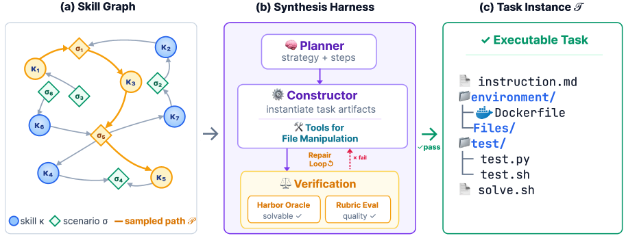
原论文 Figure 2。左侧从 scenario-mediated skill graph 采样一条有方向的 skill path；中间由 planner 与 constructor 把 path 实例化为环境、题面、测试和 oracle solution，并在执行验证、rubric 验证失败后进入 repair loop；右侧才是可训练的 terminal task。后文的 graph construction、path sampling 和 multi-agent harness 分别对应这张图的三个关键接口。
为什么随机拼 skills 不够
假设从技能池随机抽：
OCR + Kubernetes + PDF table extraction + TLS certificate
LLM 也许能写出一个题面，但四个技能未必形成因果 workflow。最终 constructor 常把它们降级成并列 checklist，实际解题路径仍很短。
SkillSynth 的核心变化是把 skill 表成状态转换：
\[\kappa: \sigma_{\text{pre}} \rightarrow \sigma_{\text{post}}\]其中：
- scenario 是某一决策点的环境语义状态；
- skill 是把一个 scenario 转成下一个 scenario 的多步 workflow。
Skill graph construction
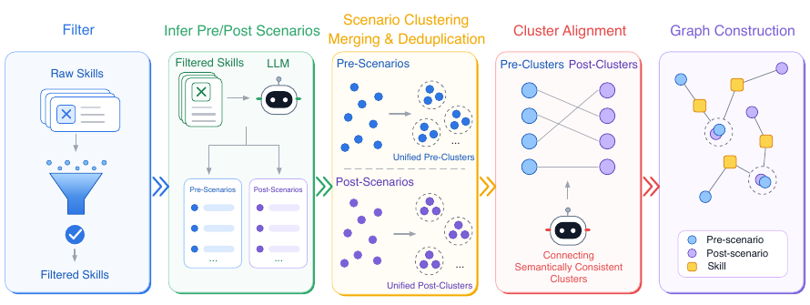
原论文 Figure 3。raw skills 先过滤，再为每个 skill 推断 pre/post scenarios；scenario 经聚类、合并与去重后，pre-cluster 与 post-cluster 做双向语义对齐，最后构造由 pre-scenario、skill、post-scenario 组成的 graph。这里的 scenario node 是连接不同 skill、形成连续 workflow path 的关键中介。
数据源来自 ClawHub 与 public GitHub skills，先过滤：
- 可在 Linux terminal 执行；
- 是结构化 workflow，不只是 prompt engineering；
- 没有 adversarial / jailbreak 行为；
- 输出 deterministic、objectively verifiable。
之后分五步：
- Scenario inference：输入 skill 的 Markdown、code、examples，推断多个 pre/post scenarios。
- Scenario dedup：embedding 后两阶段聚类；Louvain coarse buckets + complete-linkage agglomerative clustering。
- Cross-skill alignment：每个 post scenario 检索最相似的 1,000 个 pre scenarios，再由 LLM 判断兼容性；反向再做一次。
- Scenario merge：把兼容的 pre/post 合成统一 node。
- Triple filter：再次判断
(scenario, skill, scenario)是否真是有效转换。
Scenario clustering 到底在做什么
论文说比较了 9 种常见聚类算法，最终选择“两阶段聚类”；正文和附录没有逐项列出这 9 种算法的名称，因此这里不补猜测名单。选中的流程是：
scenario text
→ embedding + normalization
→ sparse semantic-similarity graph
→ Louvain：先切成 coarse buckets
→ bucket 内 complete-linkage agglomerative clustering
→ threshold sweep + held-out 人工检查
- Louvain 把 scenario 当作图节点、相似度当作边，通过提高 modularity，把“内部连接显著更密”的节点先分到同一 community。它不需要预先指定 cluster 数，作用是把全局问题切成较小的候选桶。
- Agglomerative clustering 从“每个 scenario 自成一类”开始，不断合并距离最近的两个 cluster。
- Complete linkage 用两个 cluster 中“最远的那一对样本”定义 cluster 间距离。因此只有当两组里的所有 scenario 都足够接近时才会合并；它能避免 single linkage 的 chain drift：
A≈B，B≈C，但A与C已经不是同一个状态。 - 使用 cosine distance，并在 held-out scenarios 上 sweep threshold、人工检查。目标是在“合并措辞不同的同义状态”与“保留 negation、pre/post condition 改变造成的真实差异”之间取平衡。
为什么要分两段？对 8 万级 scenario 直接做全局 hierarchical clustering 会产生近似全对全的距离与二次内存开销；Louvain 先粗分桶，让 complete linkage 只在局部做严格去重。
最终图规模：
- 82,073 scenario nodes；
- 57,214 skill-labeled transitions；
- 6,251 connected components；
- giant component 覆盖 85.6% nodes；
- median degree 2，max degree 752。
展开：附录中的 graph coverage 与 degree distribution
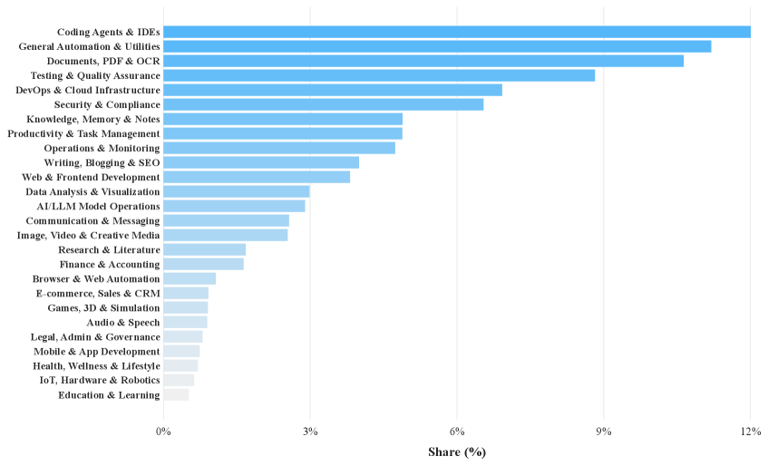
Figure 5 表明图并不只覆盖 coding、automation、document processing 等高频 terminal 工作，也包含 audio、3D、legal、health、IoT 等长尾类别。类别覆盖只是静态 diversity；真正用于训练的数据还需要 path sampler 把这些节点采到。
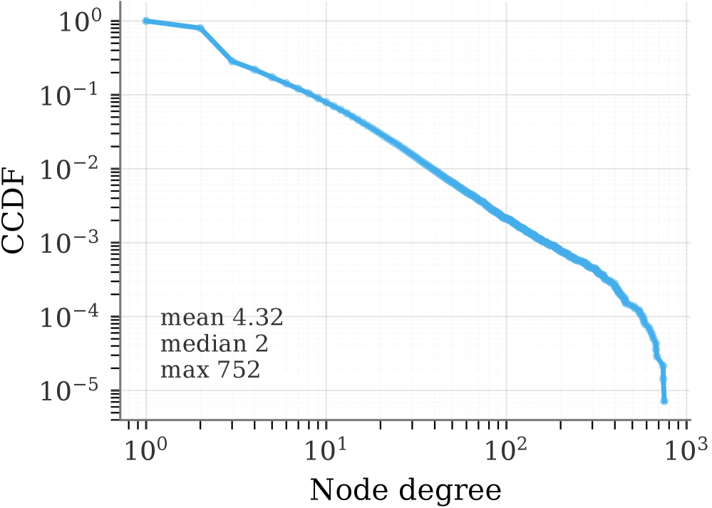
Figure 6 是 degree 的 complementary CDF，横纵轴均为 log scale。degree 呈明显 heavy tail：median 为 2，而最大 hub 为 752。少数 hub 会被普通 random walk 反复穿过，这正是后面 inverse-frequency sampling 的直接动机。
论文还报告图中可枚举出 16,632,220 条至少需要 7 个 skills 的路径。这说明图本身提供了很大的组合空间，但并不意味着每条路径都自然、可构造或可验证；后续 sampler 与 harness 仍承担质量控制。
Path sampling
采样 path：
\[\mathcal{P}=(\sigma_0,\kappa_1,\sigma_1,\ldots,\kappa_L,\sigma_L), \quad 1 \le L \le 7\]不使用 uniform random walk，因为 hub scenario 会被重复访问。SkillSynth 维护：
- scenario visit count $\nu(\sigma)$；
- skill usage count $\mu(\kappa)$。
采样概率与历史频次成反比：
\[p(\sigma)\propto(\nu(\sigma)+1)^{-1},\qquad p(\kappa)\propto(\mu(\kappa)+1)^{-1}\]同一路径中不重复 scenario 或 skill，保证 monotone progression。这样控制的是训练轨迹中最低必要技能序列，而不只是题目关键词的覆盖率。
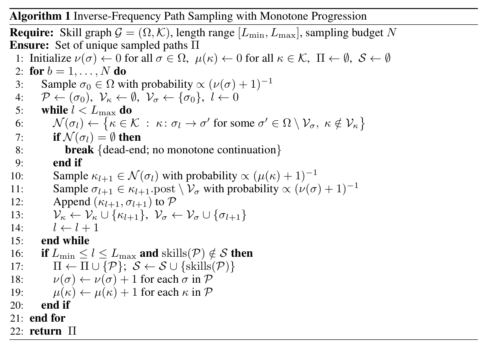
原论文 Algorithm 1，已按算法框精确裁剪。算法先按 $1/(\nu+1)$ 选择较少访问的起点；每一步只考虑未使用的 skill 与未访问的 post-scenario，再分别按 $1/(\mu+1)$、$1/(\nu+1)$ 降低高频项的概率。到达 $L_{\max}=7$ 或 dead end 时停止；只有长度合法且 skill set 未出现过的 path 才被接受，计数器也只在接受后更新。
这里有三个容易忽略的设计：
- 反频率不是绝对去重：高频节点仍可被采到，只是概率逐渐降低。
- monotone progression 是 path 内约束：同一条 path 不走回已经访问的 scenario，也不复用 skill，避免循环和“换个说法做同一步”。
- skill-set uniqueness 是 path 间约束：如果一条新 path 使用的 skill 集合已经见过，即使 scenario 顺序不同也不进入结果集；它把预算优先留给新的能力组合。
展开：一条 graph path 如何变成具体任务
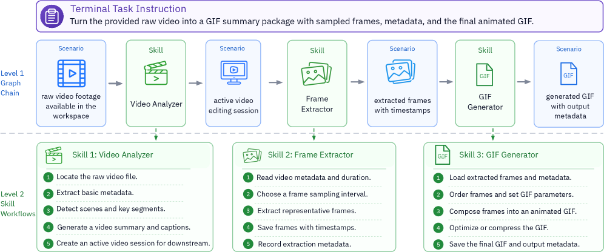
Figure 4 展示一条三-skill 路径：raw video → active video editing session → extracted frames with timestamps → generated GIF with output metadata。下半部分把每个抽象 skill 展开成 5 步 workflow。这个例子说明 graph path 不是把三个关键词塞进题面，而是要求前一步产物成为后一步的前置状态。
Multi-agent synthesis harness
每条 path 变成五类产物：
- natural-language instruction；
- initial filesystem snapshot；
- containerized environment；
- verification scripts；
- oracle solution。
Harness 分工：
skill-graph path
→ planner：sub-objectives + expected outputs
→ constructor：materialize all task artifacts
→ oracle execution check
→ rubric judge:
instruction ↔ tests alignment
instruction self-containedness
→ failed: diagnostic feedback → constructor repair
两道 verification 的职责不同：
- execution verification：在 Harbor container 中执行 oracle solution，再运行 tests，回答“任务是否真的可解、测试能否跑通”；
- rubric evaluation：检查 instruction 与 tests 是否一致、题面是否 self-contained、是否泄露 oracle，回答“即使能跑，这个 reward 是否定义正确”。
一轮运行从 3,721 paths 得到：
| Verification outcome | 数量 | 比例 | 后续用途 |
|---|---|---|---|
| Oracle + rubric 都通过 | 3,423 | 92.0% | SFT；也可用于 RL |
| Oracle 通过、rubric 未通过 | 137 | 3.7% | 保留给 SFT，RL 丢弃 |
| Oracle 未通过 | 161 | 4.3% | 不作为 usable task |
因此 oracle pass rate 是 95.7%，usable tasks 为 3,560。平均 repair 2.31 cycles、11 tool calls；721 个首轮失败任务被修回。rubric failure 中 77% 来自 instruction-test misalignment，说明“oracle 能解”并不能替代 reward specification 检查。
“保留对的和错的一起训练”需要精确理解：论文保留的是 oracle 可执行、但 rubric judge 认为 specification 有问题的 137 个实例，用于 SFT 保留 trajectory diversity；它们不进入 RL，因为错误 tests/rubric 会提供错误 reward。论文并不是把所有执行失败的 rollout 都无条件混入训练。
论文没有在主文明确写出允许的最大 repair cycles/tool calls 数值，因此这里不推断未披露的上限。
Prompt 披露边界
论文公开了：
- graph construction 的准则；
- trajectory → scenario/skill 的抽取 prompt；
- embedding query 格式。
它没有完整公开 planner / constructor 的逐字 task synthesis prompt。因此可以复述 artifact schema 与 verify-repair control flow，但不能声称拿到了完整可复现 prompt。
Harness 与评测
- task synthesis：自研 multi-agent harness；
- task difficulty：Hy3 Preview 每题尝试 3 次；
- evaluation agent：Terminus 2；
- orchestration：Harbor；
- 128 个并发 Docker environments。
生成数据的难度分布
Hy3 Preview 对每题独立尝试 3 次：
| 3 次中成功次数 | Tasks | 含义 |
|---|---|---|
| 0/3 | 1,352（38%） | 对当前 teacher 较难 |
| 1/3 | 637（18%） | learnable band |
| 2/3 | 679（19%） | learnable band |
| 3/3 | 892（25%） | 较容易 |
1/3 与 2/3 合计 37%。这部分既不是全部失败、也不是已经饱和，最接近能产生有效学习信号的难度区间。
展开：SFT recipe、结果与 error analysis
SFT 配置
- Qwen3-8B / 14B / 32B，full-parameter SFT；
- AdamW，$\beta_1=0.9,\beta_2=0.95$，weight decay $10^{-4}$；
- learning rate $2\times10^{-5}$，cosine schedule，10% warmup；
- 5 epochs，bf16，gradient clipping 1.0；
- micro-batch 为每 GPU 1，再用 gradient accumulation。
Terminal-Bench 结果
| Model | TB 1.0 | Avg. turns | TB 2.0 | Avg. turns |
|---|---|---|---|---|
| Qwen3-8B + SkillSynth | 17.1 | 1.8 | 13.5 | 2.8 |
| Qwen3-14B + SkillSynth | 22.9 | 1.8 | 19.9 | 1.6 |
| Qwen3-32B + SkillSynth | 33.8 | 3.1 | 29.6 | 1.6 |
TB 1.0 含 80 tasks，TB 2.0 含 89 tasks；结果取 3 次独立运行的均值并报告 95% confidence interval。表里最稳妥的结论是 scaling trend：同一 SkillSynth 数据配方下，模型规模越大，两个 benchmark 都持续提高。
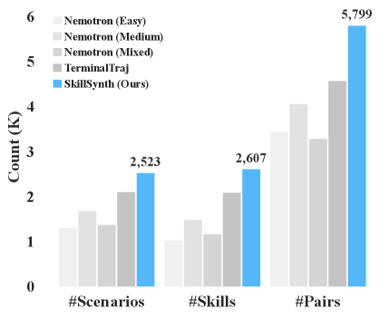
原论文 Figure 1。作者用相同抽取器比较 trajectory diversity；SkillSynth 在 scenarios、skills 与 scenario-skill pairs 上都更高。进一步的对照显示，其 unique scenario-skill coverage 比 single-skill synthesis 高 31%，比 random multi-skill synthesis 高 19%。这里衡量的是 rollout 中实际出现的结构，而不是题面里声称包含多少 skills。
失败行为分布
| Failure mode | 占比 |
|---|---|
| Partial implementation | 42.2% |
| 过度相信 inline self-test | 29.5% |
| Premature termination | 12.9% |
| API / flag hallucination | 7.0% |
| Debug fixation | 5.1% |
| Error rationalization | 3.3% |
前两类合计超过 70%：很多失败不是完全不会，而是做到一半就停，或用自己写的局部检查替代官方 verifier。这也解释了为什么 terminal-agent 数据需要完整可执行环境与独立 tests，而不能只训练“看起来合理的命令序列”。
Terminal-World：skill 同时生成 I / E / V / G
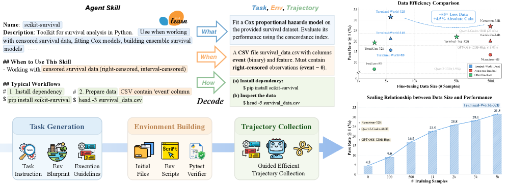
原论文 Figure 1。左侧把一个 agent skill 解码成 what / when / how，分别约束 task、environment 与 trajectory；右侧显示同一条 synthesis recipe 的数据效率与 scaling trend。这里最重要的不是“skill 是 prompt seed”，而是 skill 同时提供任务语义、环境前置条件和执行 SOP，使三类 artifact 从同一个 primitive 派生。
为什么 agent skill 适合当 synthesis primitive
Terminal-World 认为一个好的 skill 天然包含：
- what：最终要完成什么；
- when：需要哪些输入、前置状态和适用条件；
- how：典型执行步骤、工具和 failure modes。
这三部分分别可以派生：
what → instruction
when → environment blueprint
how → execution guideline
所以不必先生成题面，再事后“给题面配一个 container”。
四阶段 pipeline
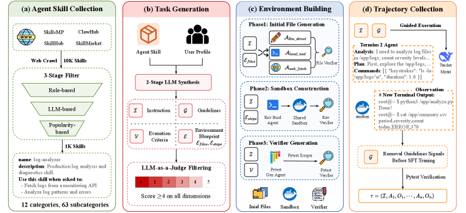
原论文 Figure 2。Stage A 从 10k skills 过滤并组合 synthesis primitives；Stage B 生成 $(\mathcal I,\mathcal E,\mathcal V,\mathcal G)$；Stage C 分三期生成 initial files、sandbox setup 与 pytest verifier；Stage D 把 guideline 只用于 teacher rollout，训练前再从 student 输入中移除。
Stage A：Skill collection
从 ClawHub / SkillMP 收集 10,000 skills：
- rule filter：去掉 terminal-irrelevant skills，剩 8,520；
- LLM filter：terminal applicability 与 content richness 都必须 3/3，剩 3,025；
- popularity filter：取下载量前 1,000，覆盖 12 categories / 63 subcategories。
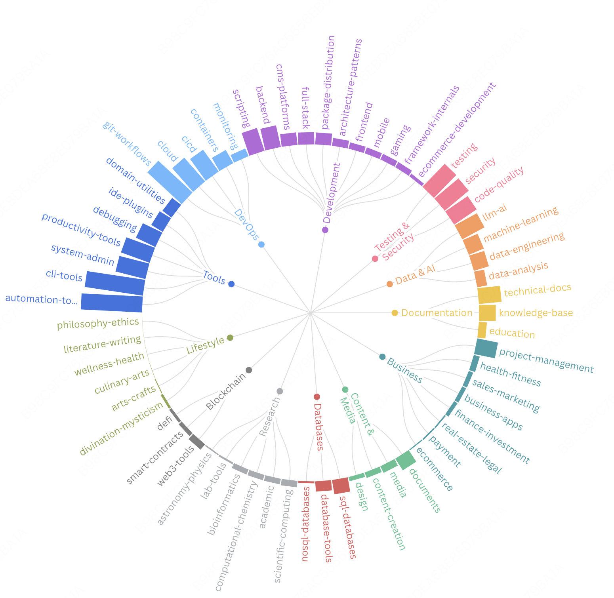
附录 Figure 6。1,000 个最终 skills 覆盖 12 个大类与 63 个 subcategories；Tools、Development、Testing & Security、Data & AI 是较大的 terminal-native 分支，同时也保留 Documentation、Business、Research、Databases 等较长尾能力。subcategory 不只是展示标签，后面决定一个 composition relation 应进入 skill team 还是 skill graph。
Skill team 与 skill graph 到底怎么划分
先对 1,000 个 single skills 的 skill pair 运行 SkillNet，得到四种关系：
| SkillNet relation | Terminal-World 怎么用 | 直觉 |
|---|---|---|
Compose with |
同 subcategory 时进入 team 候选 | 两个能力可以在同一专业工作流中协作 |
Depends on |
跨 subcategory 时作为有向 graph edge | 下游能力以前一个能力的产物或状态为前置条件 |
Similar to |
用于 deduplication | 两个 skills 近似重复，不值得同时扩展 |
Belong to |
丢弃 | 与已有 category/subcategory taxonomy 信息重复 |
因此 team 和 graph 不是按 skill 数量划分，而是按关系类型 + taxonomy 边界划分：
Skill team：同 subcategory 的 depth extension
same subcategory
+ Compose-with relations
→ TeamSkill-Creator
→ multi-role workflow
→ flatten to one skill.md
- 同一个专业子领域里，多个角色围绕同一目标分工，例如数据工程中的 schema 设计、数据校验和 pipeline monitoring。
Compose with是相对对称的协作关系，重点是把单个 skill 的 SOP 加深为多角色 workflow，而不是强调严格的先后依赖。- TeamSkill-Creator 由 Claude Code 驱动，把相关 skills 整合成统一的 goal、role responsibilities、handoff 与 end-to-end SOP。
- 最终得到 76 个 skill teams。
Skill graph：跨 subcategory 的 breadth extension
cross-subcategory
+ directed Depends-on relations
→ directed composition graph
→ greedy maximal-path cover
→ flatten each path to one skill.md
Depends on保留方向，例如data extraction → statistical analysis → report generation，后一个 skill 消费前一个 skill 产生的状态或 artifact。- 先以 skills 为节点、跨 subcategory 的 dependency 为边构造有向图。
- 对图中每个可能起点，通过 DFS 找从该点出发的 longest simple path；从所有候选中取最长路径 $p^*$。
- 把 $p^*$ flatten 为一个 graph-skill primitive 后，从图中移除该路径上的节点，再重复查找下一条最长路径。
- 路径长度小于 2 时停止，因为此时只剩无法组成 workflow 的 isolated nodes。
- 这个 greedy path cover 让进入 graph 的 skill 不重复消费，并尽量形成长的 cross-domain pipeline；最终得到 237 个 skill graphs。
论文把它们概括为：
single skill：一个原子能力
skill team：同领域多角色协作，把 workflow 做深
skill graph：跨领域有向依赖，把 capability coverage 做宽
三者最终全部 flatten 成相同 skill.md 接口，所以下游 task generator 不需要知道输入 primitive 原来是 single、team 还是 graph。
Stage B：Task generation
每个 skill/team/graph 与 FinePersonas 中一个 persona 配对。只有 pair 合理才生成：
\[(\mathcal{I},\mathcal{E},\mathcal{V},\mathcal{G})\]- $\mathcal{I}$：instruction；
- $\mathcal{E}$：initial files + setup steps；
- $\mathcal{V}$：evaluation criteria；
- $\mathcal{G}$：给 teacher 的 execution guideline。
五维 judge 每一项都必须至少 4/5：
- instruction quality；
- closed-world solvability；
- blueprint completeness；
- guideline quality；
- evaluation-criteria quality。
展开：Task Generation prompt 的完整 contract
角色与目标
- 为 terminal-agent training 创建真实 Linux terminal task。
- 输入是 Agent Skill 与 Persona；skill 决定 capability、workflow、failure modes，persona 决定领域背景、动机与请求语气。
- 任务必须忠实保留 skill 的核心机制，同时形成自包含、真实、可验证的工作请求。
运行环境
OS: Debian 13 (trixie)
working directory: /app
pre-installed:
Python 3.12 / pip 25
Node.js 20 / npm 10
Java 8
gcc/g++ 14, make, git, curl, wget, tmux
additional packages: apt-get
subdirectories:
/output, /logs, /tests, /solution
生成步骤
- 先判断 persona 与 skill 是否有真实联系。
- 明显不相关时：
pair_relevance = "unrelated"；- 给出具体原因；
task_title = "UNRELATED_PAIR"；- 其他内容字段留空。
- 相关时生成 agent 实际看到的
instruction：必须自包含、可在 sandbox 中解决，并可通过 observable outputs 验证。 initial_files的每项都包含：generation_mode:llm_direct | local_tool | remote_fetch；filepath；description：完整 reproduction spec，包含格式、内部结构、规模、2–3 个具体示例值，以及 agent 必须处理的 deliberate anomalies。
setup_steps是自然语言、有序的环境准备步骤；没有额外 setup 时返回空数组。- 每条
evaluation_criteria必须能直接翻译为 pytest assertion，包括精确 path、key、threshold 与 format。
输出
{
"pair_relevance": "related | unrelated",
"pair_relevance_reason": "...",
"task_title": "...",
"instruction": "...",
"initial_files": [
{
"generation_mode": "llm_direct | local_tool | remote_fetch",
"filepath": "/app/...",
"description": "..."
}
],
"setup_steps": ["..."],
"evaluation_criteria": ["..."]
}
只允许输出一个 JSON object，不加 Markdown fence 或额外说明。模板变量是 {skill} 与 {persona}。
展开：Guideline Generation prompt 的完整 contract
输入：
Skill: {skill}
Core Goal: {core_goal_json}
目标是生成 teacher rollout 使用的 step-by-step execution guideline。每一步必须：
- Actionable：给出具体 command、file path 或 edit；
- Verifiable：说明如何确认该步成功；
- Ordered：尊重任务依赖顺序；
- 优先从 skill SOP 提取操作；
- 关键 caveat 以
IMPORTANT:或WARNING:开头； - 不泄露最终文件内容或完整 solution；
- 避免 “inspect the project” 或 “fix errors” 这类没有 target、command、checkpoint 的空泛步骤。
每项使用统一结构：
Step N: <action> -- <exact command or edit> -- <verification or warning>
严格输出：
{
"guideline": [
"Step 1: ...",
"Step 2: ..."
]
}
展开：Task Quality Judge prompt 的完整评分规则
输入：
Persona: {persona_text}
Skill: {skill_text}
Generated Goal: {goal_json}
Judge 不检查固定文风或格式，而检查 realism、task quality 与 training value。自然、简洁的 instruction 可以拿高分，不要求固定 opener、编号列表或 Requirements: 标题。
五个维度均为 0–5：
- Instruction Quality
- 5：真实、强 skill alignment、goal 与 success condition 清晰；
- 3：可执行但泛化或部分缺信息；
- 0：冲突、不连贯或不可执行。
- Solvable & Closed-World
- 5：完全在 isolated container 内完成，数据与依赖都在 blueprint；
- 3：大体 closed-world，但有少量可合理补全的模糊点；
- 0：明确依赖外网、私有凭据或缺少关键输入。
- Blueprint Completeness
- 检查 filesystem、data schema、dependencies、entrypoints、validation 五类信息；
- 5 表示五类齐全，3 表示可构建但缺 1–2 类关键细节，0 表示空或自相矛盾。
- Guideline Quality
- 检查 workflow ordering、granularity、checkpoints、SOP coverage 与是否泄露答案；
- 过于抽象或过度脚本化都会降分。
- Evaluation Criteria Quality
- 检查是否 outcome-focused、具体、可稳定转为 black-box pytest；
- 只写主观目标或缺少关键 condition 会降分。
输出严格为：
{
"instruction_quality": {"score": 0, "reason": "..."},
"solvable_closed_world": {"score": 0, "reason": "..."},
"blueprint_completeness": {"score": 0, "reason": "..."},
"guideline_quality": {"score": 0, "reason": "..."},
"evaluation_criteria_quality": {"score": 0, "reason": "..."}
}
pipeline 只保留五项都至少 4 分的样本。
Stage C：Environment building
最终 sandbox 有三类 artifact：
F initial files
B_env setup script
T_test pytest verifier
每类 artifact 都走统一 GVR：
\[x^{(0)}=\mathrm{Generate}(\cdot),\quad x^{(t+1)}=\mathrm{Repair}(x^{(t)},\mathrm{Verify}(x^{(t)}))\]最多 3 个 repair iterations。
Initial files 按 generation mode 路由到三类 agent：
llm_direct：直接生成文本/代码；local_tool：用 Python 等本地工具生成二进制或复杂 artifact；remote_fetch：search / fetch / download 外部资产。
File verifier 同时检查：
- internal correctness：格式与描述一致；
- external consistency：跨文件 path、schema、reference 一致。
Setup 使用 shared Debian 13 sandbox + per-task setup script，而非每题一个 Docker image。env verifier 不只看 exit code，还生成 probing commands 检查 package import、CLI availability、directory 与版本。
Pytest verifier 必须：
- 可执行，无 syntax/import error；
- 在 pre-execution initial state 全部失败；
- 只检查 agent 产生的结果，不重复检查已验证的 initial files。
展开：三种 Initial File Generation prompts
1. llm_direct
输入：
Task Instruction: {instruction}
Environment Blueprint: {blueprint}
Target File: {target_file}
Previously Generated Files: {previous_files}
LLM 只生成当前 target file，并同时参考 filepath/description、task context、system requirements 与之前文件的 imports/API，保证跨文件一致。响应结尾必须包含：
{
"filepath": "exact target path",
"content": "full file content"
}
2. local_tool
这是在 Linux sandbox 内运行的 specialized artifact agent，只允许调用：
{
"tool": "python",
"target_filepath": "...",
"code": "...",
"timeout_sec": 120
}
约束：
- 只能使用 Python tool；
target_filepath必须与请求路径完全一致；- 用程序生成或修复目标 artifact；
- 一直工作到 tool observation 确认 artifact valid；
- 只处理目标 artifact，不解决整个 task。
输入为 {target_filepath}、{file_description}、{instruction_summary}。
3. remote_fetch
可用 tools：
web_search(query, top_k?, domain_hint?)
fetch_page(url, mode=http|dynamic|stealth, timeout_ms?)
download_file(url, save_as, timeout_ms?)
约束：
- agent 是 stateless，不能假设浏览器 state 或 session reuse；
- search、fetch、download 是分离步骤；
save_as必须严格等于 target path；- 一直执行到 downloaded artifact 验证成功；
- 只抓目标 artifact，不执行整体 task。
展开：File Verification prompt
System role 是 verification-only file verifier：
- scope 仅限声明的 filepaths 与 specifications；
- 只能用 shell commands 检查文件；
- 禁止修改文件、访问网络或验证 runtime state；
- evidence 不足时优先
status="continue"； - 每轮只输出一个 JSON object。
继续检查：
{
"analysis": "还需要检查什么",
"status": "continue",
"commands": ["cat /app/data.csv"]
}
结束检查：
{
"analysis": "...",
"status": "finalize",
"result": {
"overall_verdict": "pass | fail",
"file_findings": [
{
"filepath": "...",
"reason": "...",
"repair_instructions": "..."
}
],
"global_findings": [
{
"reason": "...",
"primary_owner": "llm_direct | specialized | unattributed",
"repair_instructions": "..."
}
]
}
}
pass 时两个 findings arrays 必须为空；fail 时至少有一条 finding，且 repair instruction 必须具体可执行。global_findings 只用于仍然属于 file scope 的跨文件 path、schema、reference 问题。
User input 包含 {instruction}、{file_lines} 与初始 {workspace_tree}；workspace tree 只是初始 hint，不能代替实际检查。
展开：Environment Build / Verify / Repair prompts
三类 prompt 共享以下边界：
Debian 13, x86_64
user uid=1000, non-root; privileged commands use sudo
working directory: /app
base tools already installed
instruction is context only
environment agent must not solve the task
Env Build
输入 {instruction}、{blueprint}、{pre_seeded_files}。只生成：
- 按顺序执行
setup_steps的 shell commands； - 创建必要目录；
- 从 pre-seeded dependency manifests 安装依赖；
- 启动或配置 services、environment variables 与 permissions。
Negative constraints：
- 绝不创建、下载或覆盖 pre-seeded asset path；
- 不写 application source code；
- 不执行 task entrypoint；
sudo运行 network command 时使用sudo -E保留 proxy env；- 结果以一个 Bash code block 结束。
Env Verify
输入还包括已经执行的 {setup_script}。只生成 probing commands：
- import required Python/Node libraries；
- 检查 CLI tools 是否存在；
- 检查 required directories；
- 有明确 version 要求时验证版本。
禁止安装依赖、写代码或执行 task。verify script 不使用 set -e，因此所有 probes 都应运行，以收集完整错误。
Env Repair
输入增加 {commands} 与 {errors}。repair 在一个 fresh sandbox 中执行，因此：
- 不能依赖上次失败尝试留下的 side effects；
- 必须返回完整 corrected command list，而不是 patch/delta；
- commands 会合并为使用
set -euxo pipefail的一次性 Bash script； - 同样不得覆盖 pre-seeded assets、写 application code 或执行 task。
展开：Pytest Verifier Generation prompt
Verifier 在 agent 完成任务后、同一个 sandbox state 中运行。它只判断 task 是否完成，不能读取 agent messages 或 tool traces。
输入：
Instruction: {instruction}
Evaluation Criteria: {evaluation_criteria}
Target Output File: {target_output_file}
Initial Text Files: {initial_text_files}
Initial Asset Metadata: {initial_asset_files}
Validated Environment File Paths: {validated_filepaths}
严格输出：
{
"system_packages": ["..."],
"python_packages": ["..."],
"helper_files": [
{"path": "tests/filename.ext", "content": "..."}
],
"test_outputs_py": "valid pytest source"
}
完整约束：
- 使用 pytest；
test_outputs_py必须是合法 Python；- tests 必须 black-box；
- 优先验证文件、command behavior、localhost HTTP behavior 或 deterministic end-to-end examples；
- deterministic 且 self-contained；
- 除非任务明确需要 localhost，否则不访问网络；
- 只添加 verifier 自己需要的 packages；
- extra test assets 放入
helper_files； - JSON 外不输出解释；
- initial files 已存在且已验证，不测试其存在性或内容；
- 只检查 evaluation criteria 与 agent 创建的结果，避免 vacuous pass。
Stage D：Trajectory collection
DeepSeek-V3.2 + Terminus2 接收：
instruction I + execution guideline G + history H
rollout 后运行 pytest。论文保留成功与失败 trajectories；SFT 前从模型输入中移除 guideline，让 student 学 terminal interaction，而不是依赖隐式提示。
展开：Terminus2 teacher system prompt
Teacher 每轮严格返回：
{
"analysis": "基于 terminal output 判断已完成与未完成部分",
"plan": "下一步计划、命令及预期作用",
"commands": [
{"keystrokes": "ls -la\n", "duration": 0.1},
{"keystrokes": "cd project\n", "duration": 0.1}
],
"task_complete": false
}
规则：
analysis、plan、commands必填，task_complete可选且默认 false；keystrokes原样发送给 terminal，command 必须以\n结尾；- 特殊按键使用 tmux-style sequence，例如
C-c、C-d； duration控制发送后等待时间：即时 command 通常 0.1 秒，编译/搜索约 1 秒，慢任务按需增加；- 更推荐用空 keystrokes 做短轮询，而不是一次阻塞很久；
- 空
commandsarray 合法，可用于只观察当前状态； - 输入为
{instruction}与{terminal_state}。
注意 guideline $\mathcal G$ 是 collection-time privileged guidance：teacher rollout 时可见，但 SFT 前从 student input 删除。
这套 prompts 的核心不是角色措辞，而是 scope isolation：
task agent 只定义 I / E / V
guideline agent 只生成 collection-time G
file agents 只创建指定 initial artifacts
file verifier 只检查静态文件
env agents 只准备或验证 runtime
pytest agent 只编译终态验收逻辑
teacher agent 才真正执行任务
数据与成本
- 5,723 tasks；
- 4,973 personas；
- 3,723 single-skill + 1,000 team-skill + 1,000 graph-skill；
- 平均 2.25 initial files；
- 104 file types；
- 平均 4.27 pytest tests；
- 平均 trajectory 13.44 steps / 18,176 tokens；
- 6,884 accepted task specs → 5,723 executable envs，construction success 83.1%；
- pipeline 总成本约 $999.59，约 $0.17 / trajectory。
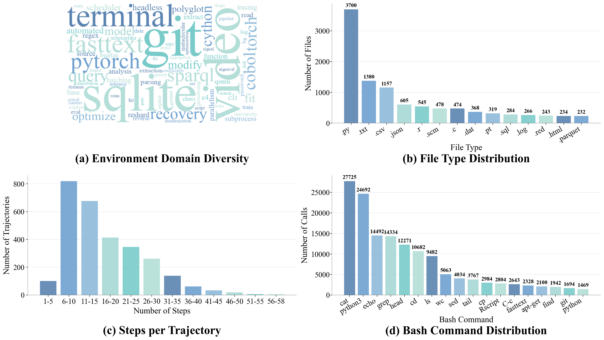
原论文 Figure 3。四个 panel 分别展示 environment domain 词云、主要 file types、trajectory step 分布和 Bash command 分布。.py、.txt、.csv 最常见，但总计覆盖 104 种 file types；trajectory 主要集中在 6–30 steps，并覆盖 1,939 种 Bash commands。
结果
论文在 Terminal-Bench 2.0、AIME24、AIME25、DABench、TableBench、BIRD 六个 benchmark 上报告 Pass@1 / Pass@3。最值得展示的是同 base-model scale 的 Terminal-Bench 2.0：
| Model | Training samples | TB 2.0 P@1 | TB 2.0 P@3 | 六项平均 P@1 | 六项平均 P@3 |
|---|---|---|---|---|---|
| Nemotron-Terminal-8B | 490.5k | 13.5 | 21.3 | 58.5 | 69.3 |
| Terminal-World-8B | 5.7k | 15.7 | 23.6 | 63.5 | 71.7 |
| Nemotron-Terminal-14B | 490.5k | 20.2 | 24.7 | 66.9 | 73.2 |
| Terminal-World-14B | 5.7k | 21.3 | 27.0 | 66.0 | 74.1 |
| Nemotron-Terminal-32B | 490.5k | 27.0 | 37.1 | 68.9 | 76.0 |
| Terminal-World-32B | 5.7k | 31.5 | 43.8 | 69.3 | 77.9 |
Terminal-World 只使用 5.7k trajectories，约为 Nemotron-Terminal 训练量的 1.2%。32B 上 TB 2.0 提高 +4.5 P@1 / +6.7 P@3；但这不应简单解释成“所有 benchmark 都大幅领先”，14B 的六项平均 P@1 仍略低于 Nemotron，优势主要体现在数据效率、TB 2.0 以及更大的 32B scale。
Ablation 与分析
SFT data strategy ablation
| Strategy | # Samples | 8B P@1 / P@3 | 14B P@1 / P@3 |
|---|---|---|---|
| Full strategy | 5.7k | 15.7 / 23.6 | 21.3 / 27.0 |
| 只用 1k single-skill | 1.0k | 9.0 / 12.4 | 13.5 / 16.9 |
| 只用 1k team-skill | 1.0k | 10.1 / 13.5 | 14.6 / 19.1 |
| 只用 1k graph-skill | 1.0k | 10.1 / 14.6 | 15.7 / 20.2 |
| 缩小到 2.3k data | 2.3k | 12.4 / 18.0 | 18.0 / 22.5 |
| 训练时保留 guideline | 5.7k | 13.5 / 20.2 | 19.1 / 24.7 |
| 移除 failure trajectories | 2.3k | 10.1 / 14.6 | 15.7 / 20.2 |
| 对 failure trajectory 用 negative SFT loss | 5.7k | 9.0 / 13.5 | 14.6 / 19.1 |
三个结论：
- graph-skill 单独训练通常略好于 single/team，但三类混合的 full strategy 最好，说明 breadth composition 有价值但不能替代数据规模与 primitive diversity。
- teacher collection 需要 guideline，但 student training 不能把 guideline 留在 input；否则模型倾向跟随 SOP，而不是学自主 planning。
- failure trajectory 不是“全错序列”。移除它已经明显掉点，对整条失败轨迹施加 negative loss 更差，因为会把其中大量正确的中间命令与 recovery 行为一起压低。
附录随机抽取 300 条 verifier-failed trajectories，由四个 judge 复核，majority vote 认为 67.7% 实际完成了任务，进一步说明 binary verifier failure 与 trajectory-level semantic incorrectness 不是同一概念。
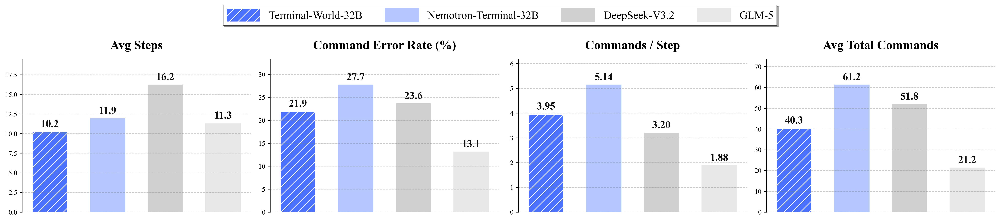
原论文 Figure 4，只在 Terminal-World-32B 与 Nemotron-Terminal-32B 都解对的任务交集上比较。Terminal-World-32B 平均 10.2 steps、40.3 commands，command error rate 21.9%，均比 Nemotron-Terminal-32B 更低；student 推理时没有 guideline，却也比 teacher DeepSeek-V3.2 的执行更简洁。
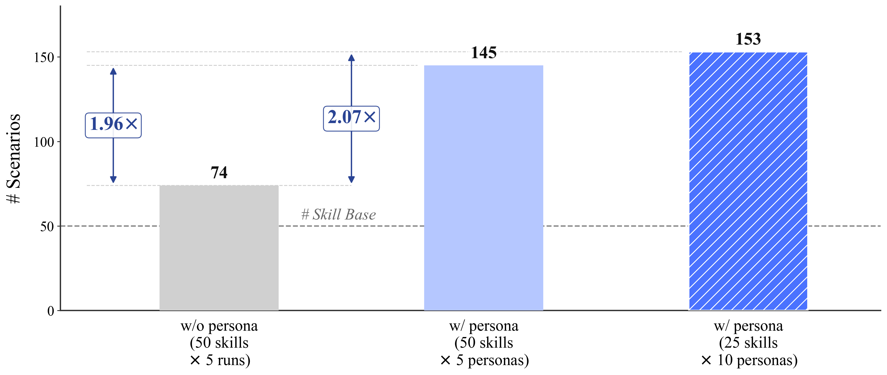
原论文 Figure 5。固定生成 250 tasks：不使用 persona 时得到 74 个 scenario clusters；50 skills × 5 personas 得到 145 个，提升 1.96×；25 skills × 10 personas 得到 153 个，提升 2.07×。persona 的作用不是增加底层 capability，而是让同一 skill 在更多真实 usage context 中实例化。
展开：Environment Quality Evaluation prompt
Judge 读取一个 Harbor task directory 中的 instruction.md、environment files 与 pytest tests；忽略 directory path 和 dataset identity，把每个 task 当匿名样本。四项各打 1–3 分：
terminal_nativeness：是否真的需要 compiler、package manager、system/build/network CLI，而不是只写文件或 echo。env_task_consistency：pre-placed files 与 setup 是否精确支持 instruction，是否存在 excess、gap 或 contradiction。env_quality：Dockerfile、setup 与 initial files 是否 well-formed、真实、完整、可执行，而非 fabricated stubs。verifier_robustness：pytest 是否覆盖关键 acceptance criteria、能区分 complete/incomplete、false-positive risk 是否低；只检查 file existence 会得低分。
不适用的维度按 1 分处理。严格输出：
{
"terminal_nativeness": 1,
"terminal_nativeness_reason": "...",
"env_task_consistency": 1,
"env_task_consistency_reason": "...",
"env_quality": 1,
"env_quality_reason": "...",
"verifier_robustness": 1,
"verifier_robustness_reason": "..."
}
三组 judge 的平均结果中，Terminal-World 的 terminal nativeness 为 2.69、env-task consistency 2.97、env quality 2.88、verifier robustness 2.92；后两项与 Endless-Terminal 相当或接近，最明显优势是 terminal nativeness 与 task-environment alignment。
CLI-Universe：把监督密度放在第一位
三阶段 pipeline
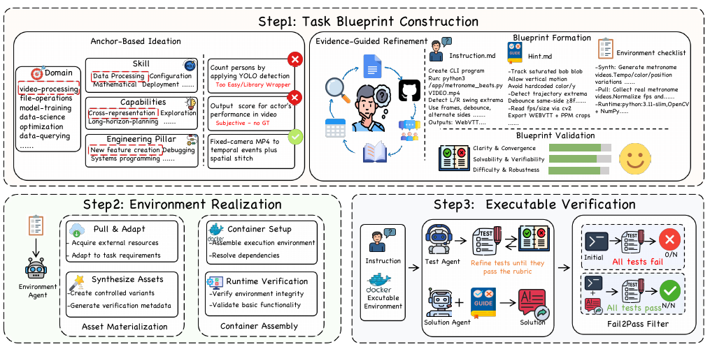
原论文 Figure 1。Step 1 不是直接写题，而是 taxonomy anchor → evidence-guided research → blueprint，并用 clarity、solvability、difficulty 三维 rubric 验 blueprint；Step 2 在 pull/adapt 与 synthesize assets 之后组装 container 并做 runtime verification；Step 3 把 test agent 与 solution agent 分开，最后要求 initial fail、solution pass。
Stage 1：Task blueprint construction
Stage 1 不是一次 prompt 直接产出题面，而是原文明确拆成三个子阶段：
Task Candidate Specification
→ Evidence-Guided Refinement
→ Blueprint Formation and Validation
1. Task Candidate Specification
候选任务由四维 anchor 定义：
| Dimension | 问题 |
|---|---|
| Domain | 任务发生在哪个技术领域 |
| Skill type | 难点依赖什么专业知识 |
| Capability | 希望触发 exploration、recovery、planning 等哪种行为 |
| Engineering pillar | 新功能、debug、deployment、systems programming 等哪类工作 |
每个 domain 都有后三个维度各自允许的 value pool。系统先从池中采样组合，再围绕这个 anchor brainstorm task ideas；idea 必须真正触发指定 capability，而不只是换一个表面主题。候选按三项打分：
- creativity：不是已有模板的轻微改写；
- technical grounding：有具体技术机制可以支撑；
- feasibility：能在可得工具与隔离环境中实现和验证。
只有高分 idea 进入下一步。
2. Evidence-Guided Refinement
research agent 迭代搜索：
- repositories；
- official docs；
- issue discussions；
- tutorials；
- usage examples。
它不是把链接当作 citation 附在题面后，而是逐轮把证据编译成：
- specific tools 与版本；
- realistic constraints；
- 真实出现过的 failure modes；
- concrete input/output contracts。
refinement 会持续到 specification 足以支持后面的 query formulation、environment construction 和 test generation。需要不可得工具、技术材料不足或约束互相冲突的候选会被丢弃。
3. Blueprint Formation and Validation
研究结果最终被编译成三个核心 artifact：
Instruction.md；- internal
Hint.md； - environment checklist。
其中 Instruction 是 agent 可见的任务；Hint 只提供给 reference-solution agent，记录关键 resolution steps 与 expected intermediate states；environment checklist 则把资产、依赖、服务、路径和运行条件交给 Stage 2。validation target、I/O contract、failure modes 与工具约束分别被写进这三个 artifact，而不是额外独立的公开文件。
进入 Stage 2 前，blueprint 还要通过 rubric review：specification 必须足够清晰，environment setup 必须允许稳定构建和可靠的 downstream verification。这个 gate 的效果由后面的 Figure 2(b) 验证：human accept rate 从 72% 升到 91%，LLM accept rate 从 75% 升到 93%。
Stage 2：Environment realization
Asset strategy 有两条路：
pull & adapt:
repository / docs / dataset / config / logs
→ normalize / inject controlled fault / rescope
synthesize:
no suitable external asset
→ controlled variants with known ground truth
→ generate verification metadata
之后打包 Docker：
- pinned dependencies；
- environment variables；
- services / permissions；
- fixed filesystem paths；
- inter-component references；
- smoke tests：install、service startup、layout、reachability。
Stage 3：Test construction + executable filtering
Test agent 根据 realized environment 与 validation target 生成测试，并按 rubric 迭代：
- correctness；
- determinism；
- edge-case coverage。
Solution agent 看 internal hint，生成成功 trajectory。
随后两层最有辨识度的过滤：
Hint-conditional
without hint → fail
with hint → pass
它不是只证明“任务可解”，而是要求 teacher supervision 对成功有实际增量。
Fail-to-pass
tests(initial environment) = fail
tests(after hinted solution) = pass
最终只有 33.6% 候选留存。
论文专门用 Figure 2 给三个 pipeline stage 配了佐证实验，而不是只展示最终分数：(a) 验证 Stage 1 的 evidence refinement 是否真的提高难度，(b) 验证 blueprint rubric，(c) 验证合成 tests 与人工 benchmark tests 的一致性；(d) 汇总五道过滤门的留存率，(e) 再看最终数据效率。
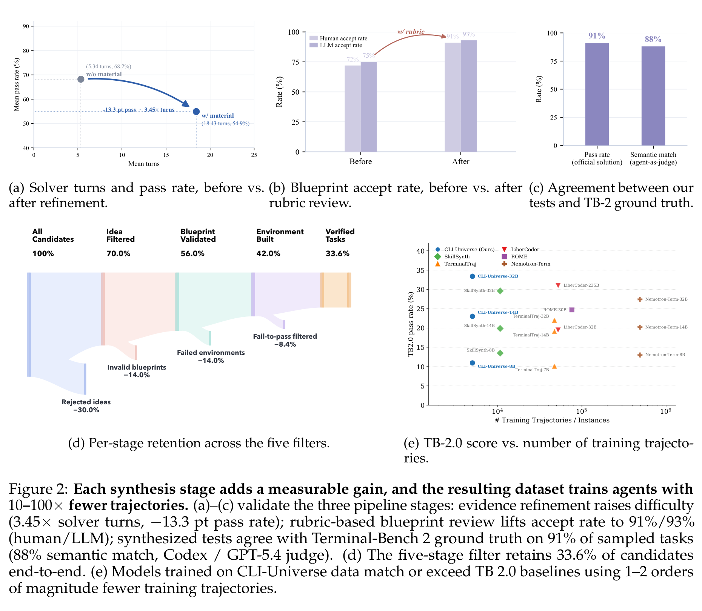
原论文 Figure 2，已替换为从 PDF 4× 渲染后按整张 figure 精确裁剪的高清版本。research refinement 让平均 solver turns 从 5.34 升到 18.43、pass rate 下降 13.3 points；blueprint review 后人类/模型接受率升至 91%/93%；合成 tests 与 Terminal-Bench 2 ground truth 达到 91% pass agreement 和 88% semantic match；五层过滤最终保留 33.6%。右下图进一步显示 CLI-Universe 用更少的 training trajectories 达到有竞争力的 TB-2.0 分数。
Prompt 和 harness 的披露边界
CLI-Universe 论文描述了 agent roles、artifact fields、rubric 与过滤逻辑，但没有公开逐字 prompt appendix，也没有公开生成代码。因此可以确定的信息是：
- prompt 输入包含 taxonomy anchor / realized env / validation target / internal hint；
- test 与 solution agent 角色隔离；
- trajectory teacher 是 Kimi-K2.6；
- benchmark evaluation 使用 Terminus 2、200 turns、avg@4；
- Codex + GPT-5.4 被用于 test semantic agreement 和 error analysis judge。
但不能声称：
- 知道 research agent 的完整 system prompt；
- 知道每轮 refinement 的精确 stop condition；
- 知道所有 synthesis agents 的温度、token budget 与 retry count；
- production harness 就是 Terminus 2。论文只明确说 Terminus 2 用于主要评测。
监督密度为什么重要
Endless 只问“强模型能否至少解出一次”；CLI-Universe 多问了一层：
这条成功 trajectory 是否真的提供了没有它就得不到的监督？
hint-free fail / hinted pass 是一个很强的 training-value filter。它可能丢掉本来就容易但仍有用的任务，也依赖 hint 的质量；但它让最终 6K trajectory 的监督密度明显高于“只要成功就收”。
Ablation：pipeline 组件之外，数据该怎样选
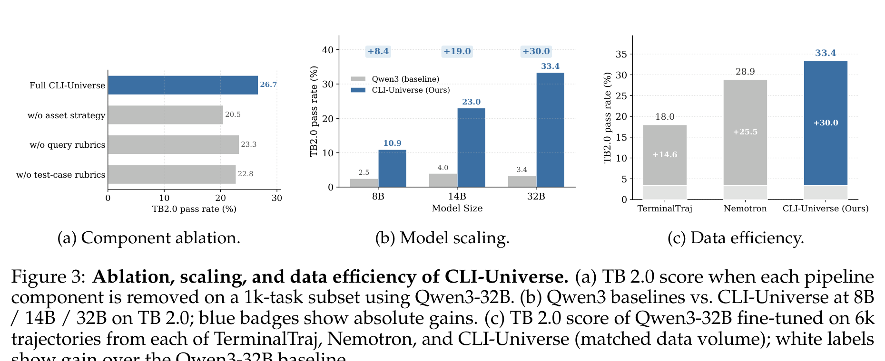
原论文 Figure 3，高清重裁版本。组件消融在 1K-task subset、Qwen3-32B 上进行：完整 pipeline 得分 26.7；移除 asset strategy、query rubric 或 test-case rubric 分别降到 20.5、23.3、22.8，说明收益不是某一个 verifier 独立带来的。同一 6K 数据对 8B、14B、32B 分别带来 +8.4、+19.0、+30.0，且相较 TerminalTraj 与 Nemotron 显示更高的数据效率。
Figure 3 消融的是 pipeline components；原论文 Table 2 还有两个容易漏掉的 data-side ablation：
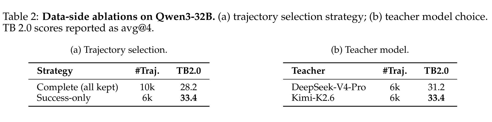
原论文 Table 2，按两张小表的边界精确裁剪。所有实验的 student 都是 Qwen3-32B，指标是 Terminal-Bench 2.0 avg@4。
(a) Trajectory selection
Complete (all kept)：保留 10K 条成功、失败和未完成轨迹，得 28.2；Success-only：只保留通过全部 tests 的 6K 条轨迹，得 33.4。
数据量减少 40%，分数反而提高 5.2 points。这个实验支持的是一个有限但重要的结论：在本文的多轮 SFT 和 32B student 设置下，失败/未完成 interaction 带来的监督噪声大于额外数据量的收益；它不等价于“失败轨迹对 RL、preference learning 或 error mining 永远没用”。
(b) Teacher model
- DeepSeek-V4-Pro：同一批 CLI-Universe tasks 上采 6K trajectories，student 得 31.2；
- Kimi-K2.6：同样采 6K，student 得 33.4。
Kimi teacher 高 2.2 points，说明 teacher 质量仍会影响最终 student；但更换 teacher 后仍能保持 31.2，也说明收益不只来自某个特定 teacher，pipeline 本身提供了相当一部分稳定监督。
泛化与仍未覆盖的类别
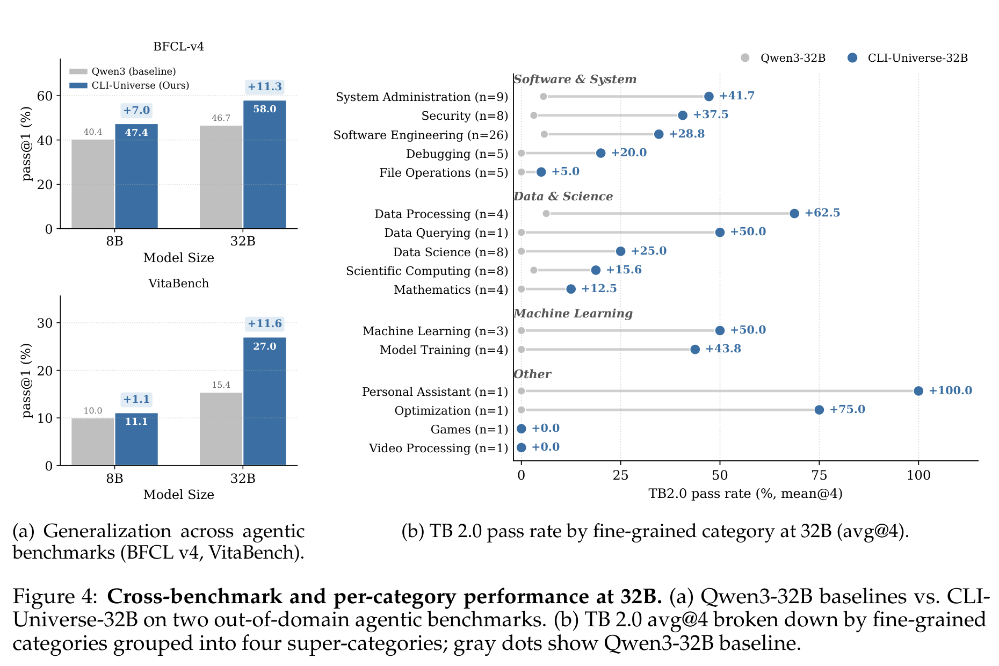
原论文 Figure 4。32B 在 BFCL-v4 从 46.7 提升到 58.0，在 VitaBench 从 15.4 提升到 27.0；TB 2.0 上 Data Processing、Machine Learning、Data Querying、Model Training 的增益最大。Games 与 Video Processing 没有提升，不过这两类各只有 1 个评测样本，适合视为待扩充方向，不宜读成稳定的能力结论。
Error study：模型究竟在哪里失败
分析过程不是让 judge 给一条轨迹贴多个宽泛标签，而是：
- 对 Terminal-Bench 2 的每个 task、每个模型运行 2 条 trajectory rollouts；
- 只分析 failed trajectories；
- 用 Codex + GPT-5.4 阅读完整轨迹；
- 从 9 种 failure modes 中只选一个“对失败最具因果责任”的 primary mode；
- 标签互斥，因此每个模型的一行加总为 100%。
九种错误分成三组：
| Class | Failure modes |
|---|---|
| Execution | disobey specification；step repetition；unaware of termination |
| Coherence | context loss；task derailment；reasoning-action mismatch |
| Verification | premature termination；no/incorrect verification；weak verification |
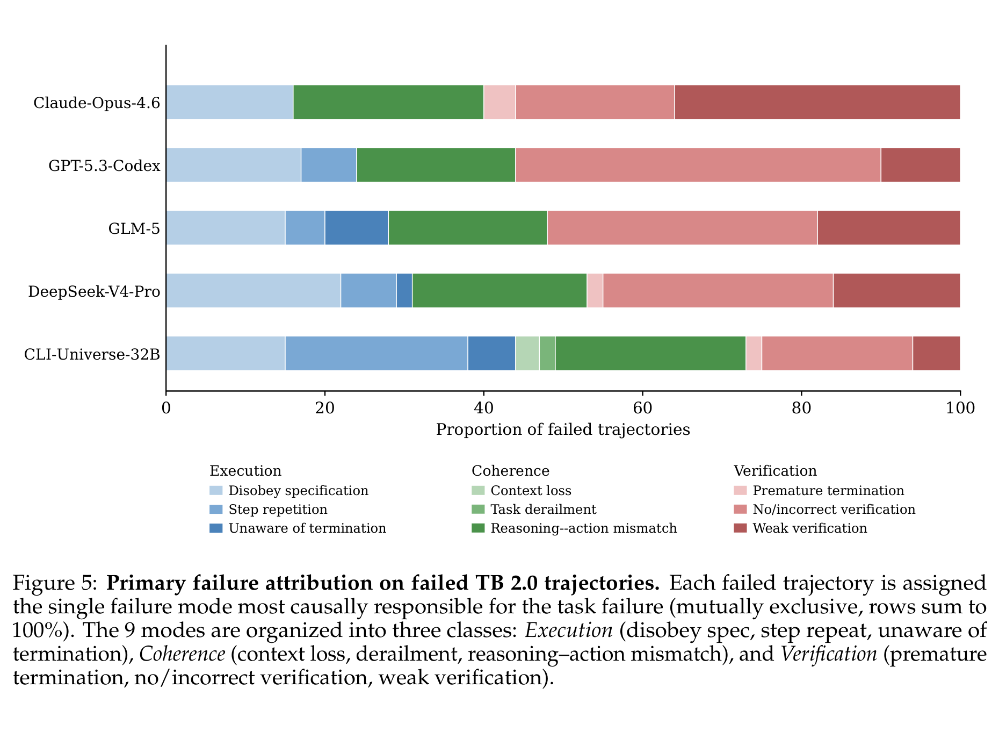
原论文 Figure 5，高清重裁版本。颜色不是性能高低，而是“已经失败的轨迹内部，主要失败原因如何分布”；因此不能从某个色块较小直接推出该模型绝对更强。
Frontier models 欠缺在哪里
- Claude-Opus-4.6、GPT-5.3-Codex、GLM-5、DeepSeek-V4-Pro 的最大类都是 Verification，占失败的 47%–60%。它们通常已经做出看似合理的实现，但没有可靠确认 goal state 是否真的满足。
- frontier models 又分成两种相反风格。Opus 更常是 weak verification：做了检查但太浅，36%，而 GPT 为 10%；GPT 更常是 no/incorrect verification：跳过检查或检查错对象，47%，而 Opus 为 20%。
- GLM-5 与 DeepSeek-V4-Pro 更接近 GPT 的 verification pattern，但 execution failure 更吵，Execution 占 28%–31%，高于 Opus 的 16% 与 GPT 的 23%。
所以前沿模型的主要问题不是“完全不会开始”，而是最后一公里：把“我做过一些修改”误当成“任务已经被独立验证完成”。
CLI-Universe-32B 欠缺在哪里
- Verification share 降到 27%，但 Execution 上升为最大类，占 44%；
- 最突出的单项是 step repetition 23%，而四个 frontier baselines 只有 0%–7%；
- 它更常在执行中陷入循环：重复同一命令、重新推导已知事实、修补同一个 bug，却不能保持稳定进展。
这表示 32B 的瓶颈已经与 frontier model 不同：训练数据强化了验证相关行为后，主要短板转向 long-horizon execution stability、working memory 与 loop breaking。严格说 Figure 5 展示的是 failure-profile shift，不能单凭相关性证明某个训练组件“治好了”验证；但它非常明确地指出下一轮数据合成不应只继续堆 tests，还要专门构造需要记住既有事实、检测重复动作并主动换策略的任务。
Terminal-Lego：从环境可执行走向 trajectory 可教学
Terminal-Lego 的论文标题是 What Makes Interaction Trajectories Effective for Training Terminal Agents?。它用环境合成搭建 controlled substrate，真正要研究的是：在 task、harness、student 与训练 recipe 都固定时，哪种 teacher trajectory 更适合 SFT。
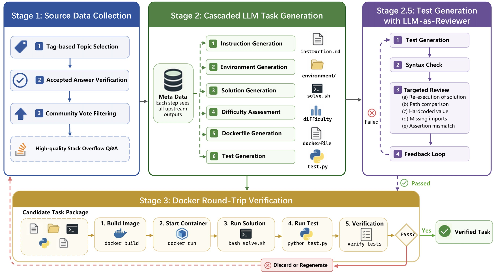
Terminal-Lego 官方 pipeline。Stage 1 从 StackOverflow 筛 source，Stage 2 级联生成六类 artifacts，Stage 2.5 用 syntax + LLM reviewer 回流修 tests，Stage 3 完成 Docker round-trip。图中把 Dockerfile 放在 tests 前；当前公开 task_generator.py 的实际调用顺序则是先生成并 review tests、再生成 Dockerfile。这是 paper-level design 与当前代码实现之间需要明确区分的一处差异。
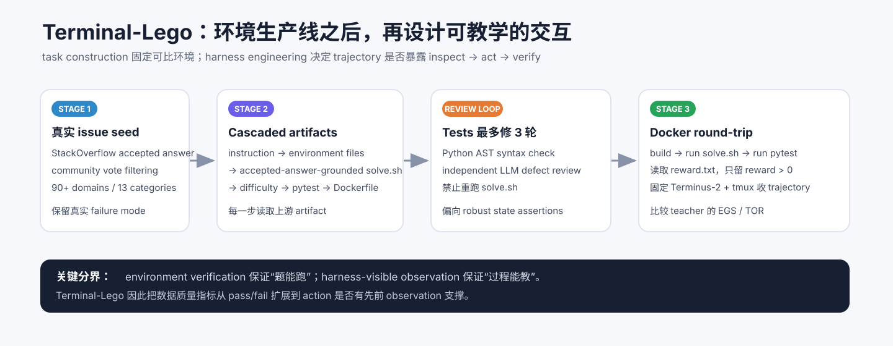
自制流程图。前三个环节回答“如何从真实 issue 造出能执行、能验收的任务”；最后的固定 Terminus-2 环节回答“同一任务上，不同 teacher 暴露了什么交互监督”。这正是 Terminal-Lego 相比前五篇多出来的一层。
Stage 1：从 StackOverflow 收真实 failure mode
source 不是随机主题词，也不是 skill list，而是 StackOverflow 的真实问题：
- 覆盖 90+ technical domains、13 个大类；
- 每个问题必须有 accepted answer，作为 practical solution signal；
- 再用 community vote threshold 做质量过滤；
- 保留 dependency conflict、path error、shell behavior、package install、network configuration 等真实 failure mode。
这里 accepted answer 不是直接复制成 agent 回复。它是后续生成 solve.sh 的 grounding，使 task seed 同时带着“真实问题”和“可行解法证据”。
Stage 2：Cascaded Task Construction
官方代码明确给出的级联顺序是：
instruction
→ environment files
→ reference solution
→ difficulty
→ tests: generate + review, up to 3 rounds
→ Dockerfile
每一步读取上游 artifact，而不是让多个 prompt 独立猜同一个 task。最后写出 Terminal-Bench 风格目录：
task_xxxxx/
├── instruction.md
├── task.toml
├── environment/
│ ├── Dockerfile
│ └── task_file/
├── solution/
│ └── solve.sh
└── tests/
├── test.sh
└── test_outputs.py
公开 prompt 的 contract 很具体：
| Generator | 输入 | 输出与关键约束 |
|---|---|---|
| Instruction | StackOverflow title、tags、body | Linux terminal task；根目录 /app/task_file/；明确 input/output path 与 success criteria |
| Environment | instruction、title、tags | JSON：files + directories；生成合理 test data |
| Solution | instruction、accepted answer、tags、已有文件列表 | 可执行 solve.sh；容器 WORKDIR=/app；处理错误并满足输出要求 |
| Difficulty | instruction、tags | easy / medium / hard；按单命令、multi-step、domain knowledge 区分 |
| Tests | instruction、files、solution、tags | test.sh + test_outputs.py；只验 solved state，禁止重新运行 solve.sh |
| Dockerfile | instruction、tags | 按语言选 base image；安装依赖；WORKDIR /app；复制 task_file |
代码默认使用 OpenAI-compatible chat-completions API 与 claude-opus-4-6，并为不同 artifact 设置不同 temperature：instruction 较高以换多样性，environment / solution / Dockerfile 较低以换稳定性，tests 更低。
Stage 2.5：Test Review Loop
tests 最多生成三轮。每轮按以下顺序检查：
generate test JSON
→ parse JSON
→ ast.parse(test_outputs.py)
→ independent LLM review
→ pass: accept
→ fail: regenerate
论文图中的 targeted review 列出五类缺陷：重复运行 solution、脆弱 path comparison、hardcoded value、missing imports、assertion mismatch。当前公开代码的 review prompt 显式检查其中四组问题：
- 测试是否偷偷用 subprocess 再跑
solve.sh； - 是否依赖脆弱的 exact path；
- 是否缺 import 或用了不可用模块；
- assertions 是否与 reference solution 的实际行为一致。
其中 hardcoded value 没有作为独立 checklist item，但 test-generation prompt 通过 robustness rules 部分覆盖：路径列表用 basename / suffix 比较、内容用包含或 regex、行数忽略空行、优先检查磁盘状态而非解析输出文字。这些约束本质上是在减少 verifier brittleness。
一个值得在分享中指出的实现细节：公开代码在三轮都未通过 review 时，会回退到第一份可解析 candidate；如果 review API 没有返回，代码也默认通过。因此论文里的“独立 review gate”在当前实现中是 best-effort repair，不是绝对 hard gate。复现时若追求严格质量，应把这两个 fallback 改为 discard。
Stage 3：Docker Round-Trip Verification
validator 的闭环是：
docker build image
→ start container
→ copy and run solution/solve.sh
→ copy and run tests/test.sh
→ read /logs/verifier/reward.txt
→ keep only reward > 0
默认 generation workers 为 16，validation workers 为 8，每个 Docker step timeout 为 300 秒。test.sh 用 pytest 运行 test_outputs.py，并把 binary reward 写入固定路径。
注意它验证的是 post-solution positive。从公开 validator 流程看，没有像 CLI-Universe 那样强制执行 hint-free fail，也没有明确对未解初态执行同一套 tests。因此 Terminal-Lego 的 gate 能证明 reference solution 后可通过，但不能单独证明 verifier 在初态必然失败。若把它用于 RL environment，最好额外补一个 initial-state negative check。
Harness Engineering：Terminus-2 与 EGS
trajectory collection 固定使用 Terminus-2：
- 单个 Docker container 内的 headless terminal；
- 每 turn 输出
analysis、plan与 shell commands； - harness 在 tmux session 执行命令并捕获 terminal output；
- 四个 teacher 使用同一 task substrate 与同一 interface。
这样可以把差异归因到 teacher interaction behavior，而不是 scaffold。论文发现最强的 standalone solver 不一定是最好的 teacher：DeepSeek-V3.2 的 benchmark 分数低于 Claude Opus 4.6，但它的 trajectory 训练出的 Qwen3 student 更强。
作者用 Environment-Grounded Supervision（EGS）解释这个现象：好的轨迹显式展示 inspect → act → verify → adapt，而不是直接跳到写操作。对应指标 Targeted Observation Ratio（TOR）检查 action target 是否被先前的 cat / ls / find / grep / head / wc / diff / stat 等 observation 覆盖。
prompt intervention 也很简单：在 system instruction 中要求先充分检查环境与相关文件，并在确认目录结构和文件内容后再修改。它让 Claude 的 TOR 从 2.5% 升到 6.6%，对应的 32B student 从 15.4% 升到 19.5%。
Terminal-Lego 最值得带走的一句话是：
Environment synthesis 决定任务是否可执行；harness engineering 决定轨迹是否把可复用的观察—行动关系暴露给 student。
六篇工作的真正分歧
Hard filtering vs soft filtering
| 路线 | 何时丢弃 | 优点 | 代价 |
|---|---|---|---|
| Endless | build/test 后 + teacher pass@16 | 数据进入 RL 前已知可解 | 16 次 teacher rollout 成本高；teacher ceiling |
| TMax | build 失败才硬丢；zero-pass 在 RL batch 丢 | 生成吞吐高，容易扩到 15K | 坏 verifier 可能消耗训练算力 |
| SkillSynth | oracle + rubric，失败可 repair | instruction/tests/path 三者更一致 | harness 复杂；LLM judge 仍可能共偏 |
| Terminal-World | 每个 artifact 都 GVR + 五维 judge | 错误定位细，repair yield 高 | agent 数多，prompt/interface 维护成本高 |
| CLI-Universe | research、blueprint、smoke、test、hint、fail2pass 多门 | supervision density 高 | 66.4% 淘汰，单位成功样本成本可能高 |
| Terminal-Lego | AST/LLM test review + solved-state Docker round-trip | 真实 issue 可扩展；task substrate 适合 matched-teacher 实验 | 当前开源 validator 缺强制 initial-state negative；review 有宽松 fallback |

自制质量漏斗。它把 CLI-Universe 的核心设计压缩成一句话：最终 6K 不是任意成功对话，而是经过能力锚定、证据研究、环境实现、test/solution 隔离与 fail-to-pass 后留下的监督单元。
Diversity 到底指什么
六篇论文的“多样性”不是一回事：
- Endless：task category / complexity / scenario 的题面多样性；
- TMax：九个采样轴与分布平衡的组合多样性；
- SkillSynth：minimal workflow path 的trajectory diversity；
- Terminal-World：skill/team/graph × persona 与 104 file types 的语义和环境多样性；
- CLI-Universe：真实 evidence / constraints / failure modes 的技术情境多样性。
- Terminal-Lego：真实 issue domain 的问题分布多样性，以及固定 task 上不同 teacher 的interaction pattern 多样性。
一个用于检验 diversity 定义的问题是：
如果 task title 不同，但 solver 永远执行
cat → python script → save answer，这算多样吗？
SkillSynth 对这个问题的回答最直接：不算，必须控制 path 中出现的 scenario-skill pairs。
Per-task image vs shared sandbox
两种工程路线：
Per-task image
- Endless、TMax、CLI-Universe、Terminal-Lego；
- isolation 强；
- 环境更接近 artifact；
- build/storage 成本高。
Shared sandbox + per-task setup
- Terminal-World；
- base environment 复用，启动更快；
- 需要非常严格的 setup scope 与 fresh-state contract；
- shared base 的工具分布可能成为隐藏先验。
SkillSynth 生成 containerized environment，但论文更关注 synthesis harness，而非镜像缓存策略。
Verifier 不是最后补的一段 pytest
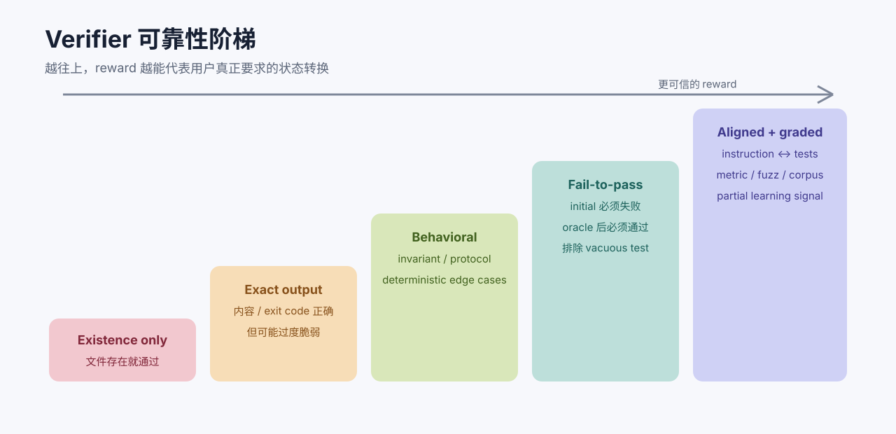
自制 verifier 阶梯。只检查文件存在很容易制造假阳性；逐步加入行为 invariant、deterministic edge cases、fail-to-pass、instruction alignment 与 graded criteria，reward 才越来越接近用户真正要求的状态转换。
可靠 verifier 至少要满足：
- Initial-state negative：初态不能通过；
- Solved-state positive：oracle / reference solution 后必须通过；
- Instruction alignment：不能检查用户没要求的限制；
- Non-vacuity：不能只检查文件存在；
- Determinism：重跑结果稳定；
- Robustness：尽量检查行为或 invariant，而非脆弱的全文相等；
- No trace inspection：只看环境终态，不看 agent 自述；
- Useful resolution：能产生 binary 或 graded learning signal。
TMax 的 graded verifier 与 CLI-Universe 的 fail-to-pass 可以组合：前者改善 reward resolution，后者保证 state transition 有效。
一条可复用的 environment synthesis pipeline
我会采用下面的混合方案：
Phase 1：Coverage planning
从 TMax 学：
- domain / skill / persona / language / task complexity / command complexity；
- fixture 与 verifier 独立采样；
- 对最终 corpus 做 entropy-based balance audit。
从 SkillSynth 学：
- skill 要有 pre/post scenarios；
- path 采样做 inverse-frequency weighting；
- 不允许随机 skills 只形成并列 checklist。
Phase 2：Blueprint
从 Terminal-World 与 CLI-Universe 学：
instruction: public user request
initial_files:
- path
- generation_mode
- reproduction_spec
setup_steps:
evaluation_criteria:
internal_hint:
expected_intermediate_states:
skill_path:
evidence:
在生成环境之前做：
- persona-skill relevance；
- closed-world solvability；
- instruction/evaluation alignment；
- evidence availability；
- safety / license / network constraints。
Phase 3：Artifact generation
按 artifact 类型路由：
- text/code → LLM direct；
- image/audio/binary/data → deterministic local tool；
- real package/docs → pinned remote fetch；
- dependencies/services → environment agent。
每个 agent 只有一个 scope，避免一个模型同时造题、造答案、造测试而发生 shared hallucination。
Phase 4：Executable QA
最低门槛：
build/setup success
initial probes pass
final verifier runs
final verifier(initial) fails
oracle solution executes
final verifier(solved) passes
再加：
- repeated-run determinism；
- instruction ↔ verifier rubric judge；
- edge-case mutation test；
- no hidden network dependency；
- timeout and resource budget；
- test leakage scan。
Phase 5：Difficulty calibration
不要只用“solver turns 多”定义困难。建议同时记录：
- strong-model pass@k；
- pass@k curve slope；
- median commands / unique commands；
- failure recovery count；
- verifier partial score；
- wall-clock / resource usage；
- minimal skill path length。
Learnable band 可以定义为：
not pass@k = 1.0
not pass@k = 0.0
而不是把所有最难任务直接投入 RL。
Phase 6：Trajectory collection
建议保留三种 rollout：
- unguided success；
- guided success；
- informative failure。
并记录：
- environment version；
- agent harness version；
- model / sampling config；
- command / observation；
- observation target 与后续 action target 的 path alignment；
- verifier output；
- terminal reason；
- hint visibility。
从 Terminal-Lego 学，再加两组数据质量指标：
inspect → act → verify的 turn pattern 与 TOR；- 同一批 task 上的 matched-teacher rollout，避免把 task difficulty 误当作 teacher quality。
这样之后才能判断 gain 来自 task、harness、teacher 还是 training recipe。trajectory 过滤也不应只看成功：高 TOR 的 structured failure 可能比“直接猜中答案”的短成功轨迹更有教学价值。
三个典型失败例子
Example A：空测试
def test_output_exists():
assert Path("/app/output.json").exists()
问题：agent 写 {} 也能过。改成：
def test_output_contract():
data = json.loads(Path("/app/output.json").read_text())
assert set(data) == {"summary", "records"}
assert len(data["records"]) == EXPECTED_COUNT
assert recompute_summary(data["records"]) == data["summary"]
对应论文：Terminal-World 的 verifier prompt 与 CLI-Universe 的 rubric-gated tests。
Example B：随机 skill composition
skills = [OCR, nginx config, SQL aggregation]
差的任务：分别 OCR、改 nginx、跑 SQL，三段互不相干。
好的 path：
scanned invoices
--OCR--> normalized text records
--load--> SQLite database
--aggregate--> monthly totals
--serve--> local HTTP report
对应论文：SkillSynth 的 scenario-mediated skill graph。
Example C：binary reward 太粗
任务：优化图像压缩。
差 verifier：
compressed.png exists → 1
更好的 verifier：
SSIM >= 0.95
size <= 0.60 × original
dimensions unchanged
对应论文：TMax metric_threshold。再叠加 CLI-Universe：
initial state fails
hint-guided solution passes
核心结论
结论一：环境才是 agent RL 的 supervision unit
自然语言 task 只是入口。真正被训练的是：
state → action → observation → state transition → executable reward
结论二：多样性必须在多个层级测
至少分开：
- instruction diversity；
- environment / fixture diversity；
- verifier diversity；
- minimal skill-path diversity；
- actual trajectory diversity。
结论三：过滤位置决定成本结构
- 生成时硬过滤：成功样本贵，但进入训练的数据干净；
- 训练时软过滤：环境便宜，但 rollout 可能浪费；
- 最现实的系统可能是分层门槛：便宜静态检查 → 少量 oracle → policy-side soft filter。
结论四：prompt 最重要的是 interface contract
可复现的 prompt 不只是“你是一个资深工程师”，而是：
- 输入字段是什么；
- 输出 schema 是什么；
- agent scope 是什么；
- negative constraints 是什么；
- error feedback 如何回流；
- stop / retry / discard 条件是什么。
结论五：不要把 SFT / RL 指标当成环境质量的唯一证据
最终 benchmark gain 受到 teacher、student、harness、turn budget、训练算法与数据混合共同影响。环境质量应该先用自身的：
- build rate；
- fail-to-pass rate；
- instruction-test agreement；
- determinism；
- difficulty distribution；
- trajectory coverage；
- unit cost；
来审计。
原论文 Figure 5。失败被拆成 execution、coherence、verification 三组：前沿模型的大量失败来自 premature termination、没有或错误的 verification、weak verification，而不只是不会执行。CLI-Universe-32B 的 verification 类占比明显下降，但 step repetition 与 task derailment 仍突出。这说明 environment synthesis 必须把 verifier 和 inspect–act–verify 行为都视为训练对象，而不是数据生产线末端的附属脚本。
讨论问题
- o3 pass@16 全失败的 task，是坏任务，还是超出当前 teacher 能力的好任务？
- TMax 把 zero-pass task 推到 RL 时过滤，节省了生成成本，但会浪费多少 rollout compute？
- skill graph 控制了预期 minimal path，agent 实际 trajectory 偏离这条 path 时，应该视为 diversity 还是 noise？
- hint-free fail / hinted pass 会不会偏向“只有特定解法”的任务？
- shared sandbox 与 per-task image，哪个更容易发生 hidden dependency leakage？
- verifier 与 task 由同一模型家族生成时，怎样发现 shared misconception？
- failed trajectories 应该用于 SFT、RL、preference learning，还是只做 error mining？
- TOR 奖励 agent 多观察，但怎样防止为了指标机械地重复
cat/ls，而不增加真正的 environment grounding？
Prompt / code / harness 复现索引
| Paper | Prompt availability | Code / harness availability | 信息边界 |
|---|---|---|---|
| Endless Terminals | 论文描述结构；代码仓公开 generation scripts | 公开；Apptainer + Harbor + SkyRL | artifact 文件、3-round repair 与 pass@16 均有依据 |
| TMax | 公开代码含 task、initial/final test、fixture/verifier prompt | 公开；Vanillux2Agent、Harbor、open-instruct | field contract 与关键 prompt 片段可直接核验 |
| SkillSynth | 公开 graph/trajectory extraction prompts；未完整公开 constructor prompt | 论文公开 harness 结构 | schema 与 control flow 可知，完整 constructor 不可复现 |
| Terminal-World | 论文附录 D 给出完整分角色 prompt templates | 论文给 Terminus2 JSON prompt 与 shared sandbox 规格 | prompt decomposition 与 harness 规格披露最完整 |
| CLI-Universe | 未公开逐字 prompt | 未公开 synthesis implementation；评测用 Terminus 2 | 明确“论文级流程可知，实现参数未披露” |
| Terminal-Lego | 公开 generation / test-review / Dockerfile prompt templates | 公开 task generator 与 Docker validator；trajectory 固定 Terminus-2 | 6 个 generator 可逐字段核验；review fallback 与 initial-negative 缺口来自当前代码 |
参考资料
- Endless Terminals: Scaling RL Environments for Terminal Agents
- Endless Terminals code
- TMax: A Simple Recipe for Terminal Agents
- TMax code and data-generation prompts
- Toward Scalable Terminal Task Synthesis via Skill Graphs (SkillSynth)
- Terminal-World: Scaling Terminal-Agent Environments via Agent Skills
- CLI-Universe: Towards Verifiable Task Synthesis Engine for Terminal Agents
- What Makes Interaction Trajectories Effective for Training Terminal Agents? (Terminal-Lego)
- Terminal-Lego code and generation prompts
- Terminal-Lego project page